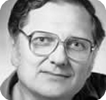
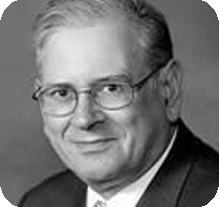

图灵奖获奖领域分类
走进图灵奖
图灵奖，是计算机协会于1966年设立的奖项，专门奖励对计算机事业作出重要贡献的个人。其名称取自世界计算机科学的先驱、英国科学家、曼彻斯特大学教授艾伦·图灵（A.M. Turing），这个奖设立目的之一是纪念这位现代计算机科学的奠基者。获奖者必须是在计算机领域具有持久而重大的先进性的技术贡献，是计算机界最负盛名的奖项，有“计算机界诺贝尔奖”之称。
图灵奖得主数据
- 大学图
- 研究方向旭日图
- 地区气泡图
图灵奖时间长廊
1st 1966 Alan J Perlis 艾伦·佩利
出生:1922年4月1日，美国宾夕法尼亚州匹兹堡
逝世:1990年2月7日，美国康涅狄格州纽黑文
研究领域:Compilers（编译器）;Programming（程序）;
教育经历:
Taylor Allderdice高中（1933-1939），宾夕法尼亚州匹兹堡；理学学士（1942年，卡内基理工学院化学）；理学硕士（1949年，麻省理工学院，数学），博士（麻省理工学院，1950年，数学）。
荣誉学位:戴维斯和埃尔金斯学院、普渡大学、滑铁卢大学和圣心大学。
经验:
麻省理工学院（1945-1950）；弹道研究实验室，阿伯丁试验场（1951年）；麻省理工学院（1952）；普渡大学（1952-1956）；卡内基理工学院（1956-1971）；ACM通讯第一编辑（1958-1962）；加州理工学院（1977-1978）；耶鲁大学（1971-1990）。
荣誉与奖项:
ACM主席（1962-1964）；ACM图灵奖（1966年）；美国艺术与科学院院士（1974年）；国家工程院院士（1977年）；AFIPS教育奖（1984年）；计算机先驱奖（1986年）；国家研究委员会成员（1979-1989），曾在议会任职（1979-1981），工程大会计算力学委员会（1981-1985），工程和技术系统委员会（1982-1989），自然科学、数学和资源委员会（1988-1989）
2nd 1967 Maurice Vincent Wilkes 莫里斯·威尔克斯
出生:1913年6月26日,英国达德利
逝世:2010年11月29日,英国剑桥
研究领域:Computer Architecture（计算机结构）;Computer Hardware（计算机硬件）;Education（教育）;
教育经历:
英国斯托尔布里奇爱德华六世国王文法学校；英国剑桥大学圣约翰学院文学学士（1934年——数学）、文学硕士（1936年）、博士（1937年——物理学）；
荣誉学位:纽卡斯尔泰恩，赫尔，肯特，伦敦市，巴斯，阿姆斯特丹，慕尼黑，链接胡平，剑桥大学，宾夕法尼亚大学
经验:
1945-1980年，剑桥大学计算机实验室主任；1965-80年，计算机技术教授；1950年至2010年，剑桥圣约翰学院研究员。
荣誉与奖项:
1956年，皇家学会研究员；1957-60年英国计算机学会第一任会长，1973年杰出研究员；1974年，美国艺术与科学院外国荣誉成员；1976年伦敦皇家工程学院院士；美国国家工程院外籍研究员。1977; 外国通讯员门贝尔，西班牙皇家科学院，1979年；美国国家科学院外籍研究员，1980年；西班牙工程院外国通讯员，1999年；荣誉弗里曼科学仪器制造商公司，2000年；图灵讲师，计算机械协会，1967年；Harry Goode纪念奖，美国信息处理协会联合会，1968年；埃克特·莫奇利奖，计算机械协会和IEEE计算机协会，1980年；IEEE计算机协会先驱奖（宪章获得者），1980年；1981年，IEEE计算机学会麦克道尔奖；法拉第奖章，IEE，伦敦，1981年；彭德奖，宾夕法尼亚大学，1982；1988年东京C&C奖；伊塔加斯计算机科学奖，都灵，1991年；京都奖，日本，1992年；1994年，计算机协会会员；冯·诺依曼勋章，IEEE，1997年；蒙巴顿奖章（与T.Kilburn一起），国家电子委员会，伦敦，1997年；爵士，2000年；计算机历史博物馆研究员，2001年。
3rd 1968 Richard Wesley Hamming 理查德·卫斯里·汉明
出生:1915年2月11日，美国伊利诺伊州芝加哥
逝世:1998年1月7日，美国加利福尼亚州蒙特雷
研究领域:Error Correcting Codes（纠错代码）;Numerical Methods（数值方法）;
教育经历:
BS芝加哥大学，芝加哥，美国（1934 -数学）；内布拉斯加大学，林肯，Nebraska，美国（1939）；博士，伊利诺伊大学，厄本那香槟，伊利诺斯，美国（1942 -数学）。
经验:
伊利诺伊大学数学教研员，伊利诺斯市厄本那香槟分校，1942-44年；助理教授，路易斯威尔大学J.B.速度科学学院，路易斯维尔，肯德基1944-45；曼哈顿项目，新墨西哥州洛斯阿拉莫斯，1945-46年；贝尔电话实验室，1946-1976年；1976年至1997年，加州蒙特利海军研究生院院士；1976年至1997年，加利福尼亚州蒙特利海军研究生院计算机科学副教授。
荣誉与奖项:
电气与电子工程师学会研究员；1979年IEEE Piore奖$1986年为纪念他而命名的1万枚奖章“理查德·W·哈明奖章”——1988年第一次获得该奖章）；1994年，计算机协会研究员；1968年图灵奖；国家工程院院士（1980年）；哈罗德·彭德奖，宾夕法尼亚大学，1981；爱德华莱姆基金奖，1996。

4th 1969 Marvin Minsky 马文·明斯基
出生:1927年8月9日，纽约
逝世:2016年1月24日,波士顿
研究领域:Artificial Intelligence（人工智能）;
教育经历:
哈佛大学数学学士（1950年）；普林斯顿大学数学博士（1954年）
经验:
美国海军（1944-45）；哈佛研究员协会初级研究员（1954-1957）；麻省理工学院林肯实验室工作人员（1957-1958）；麻省理工学院（1959年起）
荣誉与奖项:
计算机械协会图灵奖（1970年）；史密森学会双日讲师（1978年）；康奈尔大学信使讲师（1979年）；麻省理工学院基利安奖（1989年）；日本奖获得者（1990年）；研究卓越奖，IJCAI（1991年）；约瑟夫·普里斯特利奖（1995年）；皇家医学会排名奖（1995年）；IEEE计算机协会计算机先驱奖（1995年）；美国光学学会R.W.伍德奖（2001年）；富兰克林学院本杰明·富兰克林奖章（2001年）；世界怀疑论者大会表彰理性奖（2002年）；计算机历史博物馆研究员（2006年）；因“对人工智能和智能系统领域的重大贡献”入选IEEE智能系统名人堂（2011年）；丹·大卫奖（2014）。美国人工智能协会前任主席；美国艺术与科学院院士；电气与电子工程师学会研究员；哈佛研究员协会研究员；行星学会顾问委员会；国家空间协会理事会；美国国家工程院院士；美国国家科学院院士；阿根廷国家科学院院士。

5th 1970 James (Jim) Hardy Wilkinson 詹姆斯·哈迪·威尔金森
出生:1919年9月27日，英国斯特罗德
逝世:1986年10月5日，英国特丁顿
研究领域:Numerical Analysis（数值分析）;
教育经历:
约瑟夫·威廉姆森爵士数学学校，英国罗切斯特；剑桥三一学院（一等荣誉，1939年）
经验:
英国政府供应部（1940-1946）；国家物理实验室（1946年——1980年退休）；他还曾在美国几所主要大学担任访问职位
荣誉与奖项:
DSc，剑桥（1963）；英国皇家学会院士（1969年）；暹罗约翰·冯·诺依曼讲师（1970年）；ACM艾伦·M·图灵奖（1970年）；美国数学学会乔维内特奖（1987年）。J·H·威尔金森数字软件奖是以他的名字命名的。
6th 1971 John Patrick McCarthy 约翰·麦卡锡
出生:1927年9月4日，马萨诸塞州波士顿
逝世:2011年10月24日，加利福尼亚州斯坦福
研究领域:Artificial Intelligence（人工智能）;
教育经历:
加州理工学院数学学士（1948年）；普林斯顿大学数学博士（1951年）。
经验:
美国陆军二等兵（1945-1946）；普林斯顿大学数学讲师（1951-1953）；斯坦福大学数学助理教授（1953-1955）；达特茅斯学院数学助理教授（1955-1958）；麻省理工学院传播科学助理教授（1958-1962）；斯坦福大学数学教授（1962-1965）；斯坦福大学计算机科学教授（1965-2011）；斯坦福人工智能实验室主任（1966-1980）。
荣誉与奖项:
国家工程院院士（1987年）和国家科学院院士（1989年）；计算机械协会A.M.图灵奖（1971年）；国际人工智能会议卓越研究奖（1985年）；京都奖（1988年）；国家科学奖章（1990年）；计算机历史博物馆研究员（1999年）；本杰明·富兰克林计算机与认知科学奖章（2003年）。他还从国际协会和大学以及美国政府获得了许多其他荣誉和奖项。
7th 1972 Edsger W.Dijkstra 艾兹格·迪科斯彻
出生:1930年5月11日，荷兰鹿特丹
逝世:2002年8月6日，荷兰纽恩
研究领域:Program Verification（验证程序）;Programming（程序）;
教育经历:
鹿特丹伊拉斯米安体育馆（1948年）；大学本科，物理，莱顿大学，（1956）；阿姆斯特丹大学博士生计算机科学（1959）。
荣誉学位:女王大学贝尔法斯特，雅典经济与商业大学。
经验:
阿姆斯特丹数学中心计算系程序员（1952-1962）；埃因霍温理工大学数学教授（1962—1973）；巴勒斯公司研究员（1973-1984）；斯伦贝谢百年主席在得克萨斯大学奥斯汀分校计算机科学系（1984—2000）。
荣誉与奖项:
荷兰皇家艺术与科学学院院士（1971年）；英国计算机学会杰出研究员（1971年）；AFIPS哈里·古德纪念奖（1974年）；美国艺术与科学院外国荣誉成员（1975年）；IEEE计算机协会计算机先驱奖（1982年）；ACM/SIGCSE计算机科学教育杰出贡献奖（1989年）；ACM研究员（1994年）；ACM有影响力的论文奖：ACM第17卷（1974年）第11卷第643-6442002页（2003年，该年度奖更名为Dijkstra奖）的“尽管分布式控制，但仍具有自稳定系统”通信。

8th 1973 Charles W. Bachman 查尔斯·巴赫曼
出生:1924年12月11日，美国堪萨斯州曼哈顿
逝世:2017年7月13日
研究领域:Databases（数据库）;
教育经历:
机械工程理学学士（密歇根州立大学，1948年）；机械工程硕士（宾夕法尼亚大学，1950年）。
经验:
密歇根州米德兰市陶氏化学公司（1950-1955年，工程、金融、制造和系统工作任务；1956-1959年公司数据处理经理；1960年数据处理研究经理）；通用电气（生产控制服务集成系统项目，纽约，1960-1964年；计算机部，亚利桑那州凤凰城，1964-1970年——职务包括软件产品规划经理、应用技术分部经理和高级系统部门数据管理软件经理）；霍尼韦尔信息系统公司，马萨诸塞州波士顿（总参谋长，1970-1980）；库利南数据库系统公司（1980-83）；巴赫曼信息系统公司（1983-1988年任总裁兼首席执行官；1988-1996年任董事长）；卡宴软件公司（1996年至1997年任总裁）；顾问（Constellar 1997-1999；Cbr系统公司：2002-2006；InfiniteIQ:2009-2010）。
荣誉与奖项:
ACM图灵奖（1973年）；英国计算机学会杰出研究员（1977年）。
9th 1974 Donald Ervin “Don” Knuth 高德纳
出生:1938年1月10日，威斯康星州密尔沃基
研究领域:Analysis of Algorithms（算法分析）;Programming（程序）;
教育经历:
毕业于密尔沃基路德会高中（1956年）；卡斯理工学院数学学士（1960年），他的本科工作非常出色，通过全体教员的特别投票，他同时获得了硕士学位；加州理工学院数学博士（1963年）。
经验:
加州理工学院助理兼副教授（1963-1968）；斯坦福大学（1968-1992）的一系列正式和命名教授职位；斯坦福大学计算机编程艺术荣誉教授（1993年起）。
荣誉与奖项:
Knuth获得了100多个奖项和荣誉。其中包括：第一届ACM Grace Murray Hopper奖（1971年）；美国艺术与科学院院士（1973年）；艾伦·M·图灵奖（1974年）；国家科学院院士（1975年）；莱斯特·R·福特奖（1975年和1993年）；美国数学学会吉布斯讲座（1978）；国家科学奖章（1979年，卡特总统颁发）；国家工程院院士（1981年）；IEEE计算机协会计算机先驱奖（1982年）；富兰克林勋章（1988年）；哈维奖（1995年）；IEEE约翰·冯·诺依曼奖章（1995年）；京都奖（1996年）；计算机历史博物馆研究员（1998年）。

10th 1975 Allen Newell 艾伦·纽厄尔
出生:1927年3月19日，旧金山，CA.
逝世:1992年7月19日，宾夕法尼亚州匹兹堡
研究领域:Artificial Intelligence（人工智能）;List Processing（列表处理）;
教育经历:
物理学学士（斯坦福大学，1949年）；博士（卡内基理工学院，工业管理研究生院，1957年）。
经验:
美国海军（1943-45）；兰德公司（1950-1961）；卡内基梅隆大学（1955-1992年：研究生，1955-57年，计算机科学和心理学教授，1961-1992年）
荣誉与奖项:
美国信息处理协会联合会哈里·古德纪念奖（1971年）；当选为美国国家科学院院士。(1972); 当选美国艺术与科学院院士（1972年）；ACM的A.M.图灵奖（1975年）；小亚历山大·C·威廉姆斯奖（与威廉·C·贝尔、罗伯特·查普曼和约翰·L·肯尼迪合办），人类因素学会（1979年）；当选美国国家工程院院士（1980年）；美国人工智能协会第一任主席（1980年）；IEEE计算机协会计算机先驱奖（1981年，特许获得者）；来自富兰克林研究所的路易斯·E·利维奖章（1982年）；美国心理学协会杰出科学贡献奖（1985年）；荣获宾夕法尼亚大学荣誉博士学位（1986）；威廉·詹姆斯讲座，哈佛大学（1987）；国际人工智能联合会议卓越研究奖（1989年）；荷兰格伦宁大学行为与社会科学博士（荣誉）博士（1989）；威廉·詹姆斯研究员奖，美国心理学会（1989年，宪章获得者）；IEEE伊曼纽尔·皮奥雷奖（1990年）；美国国家科学奖章（1992年）；ACM/AAAI Allen-Newell奖是为纪念他而命名的，也是卡内基梅隆大学计算机科学学院的卓越研究奖。
10th 1975 Herbert Alexander Simon 赫伯特·亚历山大·西蒙
出生:1916年6月15日，美国威斯康星州密尔沃基
逝世:2001年2月9日，美国宾夕法尼亚州匹兹堡
研究领域:Artificial Intelligence（人工智能）;List Processing（列表处理）;
教育经历:
芝加哥大学，政治学（1937）；博士，芝加哥大学，政治学（1943）。
经验:
伊利诺伊理工学院政治学助理教授（后来担任副教授和系主任）（1944-1949）；卡内基梅隆大学工业管理研究生院教授（1949-1965年），计算机科学与心理学教授（1965-2001年），终身受托人教授（1972-2001年）
荣誉与奖项:
国家科学院院士（1972年）；ACM图灵奖（1975年——与艾伦·纽厄尔合作）；诺贝尔经济学奖（1978年）；国家科学奖章（1986年）；哈罗德·彭德奖（1987年）；运筹学与管理科学研究所冯·诺依曼理论奖（1988年）；APA终身成就奖（1993年）；ACM研究员（1994年）；IJCAI卓越研究奖（1995年）；APSA瓦尔多奖（1995年）。

11th 1976 Michael Rabin 迈克尔·拉宾
出生:1931年9月1日，德国布雷斯劳（现波兰弗罗茨瓦夫）
研究领域:Finite Automata（有限自动机）;Theory（理论）;
教育经历:
理学硕士（希伯来大学数学，1953年）；普林斯顿大学数学博士，1957年。
经验:
哈佛大学教授（戈登·麦凯计算机科学教授，1981-1983；托马斯·J·沃森计算机科学教授，1983）；耶路撒冷希伯来大学教授（Albert Einstein Chair，1980年至1999年；职业校长，1976—1980）；校长（学术负责人）1972-1975年；1970-1971年计算机科学系主任；1964-1966年数学研究所所长；高级讲师、副教授和教授（1958-1965年）；普林斯顿高等研究所（1958年成员；1956-1958年哈佛大学优秀讲师）。他还曾在欧洲和美国的主要大学进行过多次访问。
荣誉与奖项:
C.魏茨曼精确科学奖（1960年）；库兰特数学学院最佳教师奖（1970年）；罗斯柴尔德数学奖（1974年）；美国艺术与科学学会成员（1975年）；ACM图灵奖（1976年）；哈维科学技术奖（1980年）；以色列科学与人文学院（1982年）；美国国家科学院外籍助理研究员（1984年）；美国哲学学会外国会员（1988年）；IUHPS逻辑、方法学和科学哲学司司长（1990-2003）；以色列精确科学/计算机科学奖（1995年）；AssociéÉtranger，法国科学院（1995年）；波尔多大学名誉博士（1996）；海法大学荣誉博士（1996年）；纽约大学荣誉博士学位（1998年）；以色列公开大学荣誉博士（1999年）；IEEE查尔斯·巴贝奇计算机科学奖（2000年）；本古里安大学荣誉博士学位（2000年）；EMET精确科学/计算机科学奖（2004年）；ACM卡内拉基斯理论与实践奖（2004年）；ASL戈德尔奖讲座（2004年）；欧洲科学院成员（2007年）；英国皇家学会外国会员（2007）；弗罗茨瓦夫大学荣誉博士学位（2007年）；IACR研究员（2009）；迪克斯特拉奖（2015年）；特拉维夫大学丹·大卫奖（“未来”类别）与伦纳德·克莱诺克和戈登·E·摩尔共同获得计算机和电信奖。
11st 1976 Dana Scott 达纳·斯科特
出生:1932年10月11日，美国加利福尼亚州伯克利
研究领域:Finite Automata（有限自动机）;Theory（理论）;
教育经历:
文学学士（加州大学伯克利分校，1954年）；博士（普林斯顿大学，1958年）。
经验:
芝加哥大学（讲师，1958—1960）；加利福尼亚大学，伯克利（数学助理教授，1960－1962；数学副教授，1962-1963）；斯坦福大学（逻辑和数学副教授，1963-1967年，逻辑和数学教授，1967-1969年）；阿姆斯特丹大学（数学系客座教授，1968—1969）；普林斯顿大学（哲学和数学教授，1969-1972）；牛津大学（数学逻辑教授，1972-1981）；卡内基梅隆大学（1981-1989年，大学计算机科学、数理逻辑和哲学教授，1989-2003年，希尔曼计算机科学教授，2003年起退休）；林茨大学，奥地利（奥斯特里奇大学教授，符号计算和逻辑，1992—1993）。
荣誉与奖项:
美国数学学会勒罗伊·P·斯蒂尔奖（1972年）；ACM图灵奖，迈克尔·拉宾（1976年）；哈罗德·彭德奖，宾夕法尼亚大学（1990）；瑞典皇家科学院罗尔夫·肖克逻辑与哲学奖（1997年）；波尔扎诺数学科学功绩奖章，捷克科学院（2001年）；欧洲理论计算机科学协会（EATCS）奖（2007年）；俄罗斯科学院索波列夫数学研究所金奖（2009年）。他是美国艺术与科学院、英国科学院、芬兰科学与文学院、纽约科学院、美国国家科学院、欧洲科学院的成员；和ACM的一个同事。
12nd 1977 John Warner Backus 约翰·华纳·巴克斯
出生:1924年12月3日，美国宾夕法尼亚州费城
逝世:2007年3月17日，美国俄勒冈州阿什兰
研究领域:Programming Languages（程序语言）;Programming（程序）;
教育经历:
数学学士（哥伦比亚大学，1949年）；数学硕士（哥伦比亚大学，1950年）；
荣誉学位:亨利·彭加勒大学，1989年
经验:
美国陆军（防空炮兵部队；工程和预科学校，1942-1946年）；IBM（纯科学和高级科学部门程序员，1950年至1954年；编程研究部门经理，1954年至1959年；研究人员，1959年至1963年；IBM研究员，1963年至1991年）；加利福尼亚大学，圣克鲁斯（信息科学兼职教授，1974）；加利福尼亚大学，伯克利（客座教授，1980；客座教授，1985）。
荣誉与奖项:
IBM研究员（1963年）；IEEE计算机协会W·W·麦克道尔奖（1967年）；国家科学奖章（1975年）；ACM图灵奖（1977年）；国家工程院德雷珀奖（1993年）；计算机历史博物馆研究员（1997年）；小行星6830约翰巴克以他的名字命名（2007年6月1日）。
13rd 1978 Bob Floyd 鲍勃·弗洛伊德
出生:1936年6月8日，纽约
逝世:2001年9月25日，加利福尼亚
研究领域:Software（软件）;
教育经历:
芝加哥大学文科学士，1953；理学学士（物理，芝加哥大学，1958）。
经验:
装甲研究基金会成员，现为IIT研究所（1953-1962）；计算机协会高级项目科学家（1962-1965）；助理教授（卡内基梅隆大学，1965-1968）；斯坦福大学（1968-1970年，副教授；1970-1994年，正教授；1973-1976年，计算机科学主席）。
荣誉与奖项:
美国艺术与科学院、美国科学促进协会和计算机械协会研究员；被任命为海军研究生院第一任格雷斯·默里·霍珀教授，任期一年；ACM图灵奖（1978年）；IEEE计算机先驱奖（1992年）。
14th 1979 Kenneth Eugene Iverson 肯尼斯·尤金·艾弗森
出生:1920年12月17日，加拿大阿尔伯塔省卡姆罗斯
逝世:2004年10月19日，加拿大安大略省多伦多
研究领域:Programming Languages（程序语言）;
教育经历:
数学和物理学士（1950年，金斯敦皇后大学）；数学硕士（哈佛大学，1951年）；应用数学博士（哈佛大学，1954年）。
经验:
哈佛大学（1954-1955）讲师（应用数学）；哈佛大学助理教授（应用数学）（1955-1960）；国际商业机器（1960-1980）；I.P.Sharp Associates（1980-1987）。
荣誉与奖项:
IBM研究员（1971年）；哈里·古德纪念奖（1975年）；ACM图灵奖（1979年）；IEEE计算机协会计算机先驱奖（1991年）；国家技术奖章（1991年）；约克大学荣誉理学学士（1998年）
15th 1980 Tony Hoare 东尼·霍尔
出生:1934年，斯里兰卡
研究领域:Programming Languages（程序语言）;
教育经历:
牛津的龙学院和坎特伯雷的国王学院。他的大学本科教育也在牛津大学，他在那里以及莫斯科州立大学都做过研究生。
经验:
皇家海军（1956-57），艾略特兄弟（1960-1968），贝尔法斯特皇后大学（1968-1977）；牛津大学（1977）；现任牛津大学名誉教授，英国剑桥微软研究院高级研究员。
荣誉与奖项:
图灵奖（1980年）；哈里·H·古德纪念奖（1981年）；皇家学会院士（1982年）；京都奖（2000年）；因对教育和计算机科学的贡献而被女王授予爵位（2000年）；几所大学的荣誉博士学位；皇家工程学院院士（2005年）；计算机历史博物馆研究员（2006年）；编程语言成就奖（2011年）；IEEE约翰·冯·诺依曼奖章（2011年）。
16th 1981 Edgar Frank (Ted) Codd 埃德加·弗兰克
出生:1923年8月19日，英格兰波特兰岛
逝世:2003年4月18日，佛罗里达州威廉姆斯岛
研究领域:Databases（数据库）;
教育经历:
英国牛津大学埃克塞特学院数学荣誉学位（理学学士，后获硕士学位）（1942年和1948年）；M.Sc，博士，计算机与通信科学，密歇根大学，安娜堡，密歇根（1961和1965）。
经验:
皇家空军飞行中尉（1942-1946）；田纳西大学数学讲师（1949）；IBM编程数学家和计算机科学家（1949-1953和1957-1984）；加拿大计算机设备数据处理主管（1953-1957）；关系研究所首席科学家（1985-1994）。Codd也曾在不同的编辑委员会中活跃，包括IBM系统编程系列书籍、IEEE软件工程交易、数据库系统ACM交易和《信息系统杂志》的编辑委员会。
荣誉与奖项:
英国计算机学会研究员（1974年）；IBM研究员（1976年）；ACM图灵奖（1981年）；当选美国国家工程院院士（1981年）；IDUG第一届年度成就奖（1986年）；ACM研究员（1994年）；当选美国艺术与科学院院士（1994年）；IEEE计算机先驱奖（1996年）；达马国际成就奖（2001年）；计算机行业名人堂入会者（2004年，邮报）；和成员，Phi Beta Kappa和Sigma席。
17th 1982 Stephen Arthur Cook 斯蒂芬·阿瑟·库克
出生:1939年，纽约州布法罗
研究领域:Computational Complexity（计算复杂度）;
教育经历:
密歇根大学学报（1961）；S.M.，哈佛大学（1962年）；哈佛大学博士（1966年）。
经验:
加利福尼亚大学助理教授伯克利（1966—1970）；多伦多大学副教授（1970－1975）；多伦多大学教授（1975-1985）；多伦多大学教授（1985）。
荣誉与奖项:
NSERC E.W.R.斯蒂奇纪念奖学金（1977年）；计算机机械协会图灵奖（1982年）；加拿大委员会基拉姆研究奖学金（1982年）；加拿大理事会伊扎克·沃尔顿·基拉姆纪念奖（1997年）；CRM领域奖（1999年）；加拿大皇家学会约翰·L·辛格奖（2006年）；NSERC卓越奖（2007年）；捷克科学院伯纳德·博尔扎诺奖章（2008年）；加拿大皇家学会研究员；伦敦皇家学会研究员；计算机协会研究员；美国国家科学院院士；美国艺术与科学院院士；哥廷根科学院院士；格哈德·赫茨伯格（Gerhard Herzberg）加拿大科学与工程金奖（2013年），获得100万美元的研究资金；安大略省政府于2013年任命他为安大略省骑士团成员，这是安大略省的最高荣誉。
18th 1983 Dennis MacAlistair Ritchie 丹尼斯·麦卡利斯泰尔·里奇
出生:1941年9月9日，纽约布朗克斯维尔
逝世:2011年10月
研究领域:Operating Systems（操作系统）;
教育经历:
哈佛大学物理学和应用数学博士（1967年）；
经验:
新泽西州Murray Hill Bell Laboratories技术人员（Multics project 1967-1969，C语言的创建者，Unix操作系统的共同创建者，Bell Labs操作系统计划9的共同创建者，地狱分布式操作系统的共同创建者，Bell Laboratories部门负责人）
荣誉与奖项:
ACM编程系统和语言论文奖（1975年）；ACM A.M.图灵奖（1983年）；ACM软件系统奖（1983年）；IEEE Emmanuel R.Piore奖（1983年），IEEE Richard W.Hamming奖章（1990年）；IEEE计算机先驱奖（1994年）；计算机历史博物馆研究员奖（1997年）；比尔·克林顿总统颁发的国家技术奖章（1998年）；ACM SIGOPS名人堂奖（2005年）。日本信息与通信奖（2011年）。里奇于1988年当选为美国国家工程院院士。工业研究所成就奖，以表彰他在Unix操作系统开发方面对科学技术和社会的贡献（2005年）。
18th 1983 Kenneth Lane Thompson 肯尼斯·莱恩·汤普森
出生:1943年2月4日,新奥尔良
研究领域:Operating Systems（操作系统）;
教育经历:
ECSS科学学士（1965）和硕士学位（1966），电气工程和计算机科学，加利福尼亚大学，伯克利。
经验:
新泽西州Murray Hill Bell Laboratories技术人员（Multics project 1967-1969，Unix操作系统的共同创造者，Belle的共同创造者，1980年在林茨举行的第三届世界计算机象棋锦标赛的冠军，Bell Labs操作系统计划9的共同创造者）；亲爱的，伙计；谷歌，杰出工程师（谷歌编程语言Go的联合创始人）。
荣誉与奖项:
ACM编程系统和语言论文奖（1975年）；ACM A.M.图灵奖（1983年）；ACM软件系统奖（1983年）；IEEE Emmanuel R.Piore奖（1983年）。IEEE Richard W.Hamming奖章（1990年）；IEEE计算机先驱奖（1994年）；计算机历史博物馆研究员奖（1997年）；1998年比尔·克林顿总统颁发的国家技术奖章；ACM SIGOPS名人堂奖（2005年）。日本信息与通信奖（2011年）。
19th 1984 Niklaus Wirth 尼克劳斯·沃思
出生:1934年2月15日,瑞士温特图尔
研究领域:Programming Languages（程序语言）;
教育经历:
电子工程学士学位（瑞士联邦理工学院苏黎世·苏黎世，1959年）；理学硕士（加拿大拉瓦尔大学，1960年）；电气工程和计算机科学博士（加州大学伯克利分校，1963年）。
经验:
计算机科学助理教授（斯坦福大学，1963-1967年）；助理教授（苏黎世大学，1967-1968年）。信息学教授（ETH Zürich，1968-1999）（施乐PARC 1976-1977年和1984-1985年的一年休假）。
荣誉与奖项:
ACM图灵奖（1984年）；IEEE计算机协会，计算机先驱奖（1988年）；IBM欧洲科学技术奖1988年（1989年）；瑞士工程学院成员（1992年）；美国工程院外籍研究员（1994年）；奥登·普勒·梅里特（1996年）；ACM SIGSOFT，软件工程杰出研究奖（1999年）；莱昂纳多·达芬奇勋章，法国兴业银行（1999年）；曼钦爱德华德·莱茵技术奖（2002年）；计算机历史博物馆研究员（2004年）。十个荣誉博士学位（约克大学，英国，1978；综合理工学校联合会，洛桑，瑞士，1978；大学拉瓦尔，魁北克，加拿大，1987；约翰内斯开普勒大学大学林茨，奥地利，1993；新西伯利亚大学，俄罗斯，1996；开放大学，英国，1997；比勒陀利亚大学，南非，1998；马萨里克大学，布尔诺，捷克共和国ic，1999年；圣彼得堡国家信息技术、力学与光学大学，俄罗斯，2005；埃克特林堡州立大学，俄罗斯，2005）。
20th 1985 Richard Karp 理查德·卡普
出生:1935年1月3日，马萨诸塞州波士顿
研究领域:Combinatorial Algorithms（组合算法）
教育经历:
哈佛大学AB分校，1955年；SM哈佛1956；1959年哈佛大学应用数学博士；八个荣誉学位。
经验:
1959-1968年纽约约克敦高地IBM沃森研究中心研究人员；1964-1965年，密歇根大学电气工程系副教授；1968—1994年，加利福尼亚大学计算机科学与工业工程与运筹学教授伯克利；1973-1975年加利福尼亚大学计算机科学与工程系副主任，伯克利；1980年至1994年加利福尼亚大学数学教授伯克利；1985-1986年伯克利数学科学研究所计算复杂性项目联合主席；1988-1995年加州伯克利国际计算机科学研究所研究员；1995～1999年华盛顿大学计算机科学教授、分子生物技术副教授；1999 -大学教授，加利福尼亚大学，伯克利，计算机科学，数学和生物工程；1999年——加州伯克利国际计算机科学研究所研究员；2001-2003年数学及其应用研究所理事会主席；2001年至2004年，美国国家科学院第34分院创始主席。
荣誉与奖项:
1977年兰彻斯特运筹学奖（共同获奖）；富尔克森离散数学奖，1979年；米勒研究教授，伯克利，1980-81；伯克利大学教师研究讲师，1981年至1982年；爱因斯坦奖学金和戴维斯夫人奖学金，以色列海法Technion，1983年；ACM图灵奖，1985年；卓越教学奖，加州大学伯克利分校，1986；科学博士（荣誉），宾夕法尼亚大学，1986；约翰·冯·诺依曼讲师，暹罗，1987年；理学博士（honoris causa），Technion，1989年；加州大学伯克利分校1939主席班，1989；ORSA/TIMS冯诺依曼理论奖，1990年；科学博士（荣誉），麻州大学，1990；1992年，乔治敦大学人文文学博士（honoris causa）；1995年第九届国际并行处理研讨会巴贝奇奖；国家科学奖章，1996年；哈佛大学百周年纪念奖章，1997年；2008年京都奖；哈维奖；本杰明·富兰克林奖章。
21st 1986 John Hopcroft 约翰·霍普克罗夫特
出生:1939年10月7日，美国华盛顿州西雅图
研究领域:Analysis of Algorithms（算法分析）;Data Structures（数据结构）;
教育经历:
西雅图大学理学学士（1961年，电气工程）；斯坦福大学理学硕士（1962年电气工程）；斯坦福大学博士（1964年，电气工程）。
经验:
普林斯顿大学助理教授（1964-1967）；康奈尔大学（副教授，1967-1971年；教授，1972-85年；约瑟夫·C·福特，工程学院教授，1985-1994年；计算机科学系主任，1987-92年；大学事务副院长，1992-1993年；约瑟夫·西尔伯特，工程学院院长，1994-2001年；计算机科学系教授，2001-2004年；IBM工程和Ap教授）应用数学（2004年及以后）。
荣誉与奖项:
国家科学基金会研究生研究员，1961-1964；计算机械协会A.M.图灵奖（与R.E.Tarjan分享），1986年；1987年，美国艺术与科学院院士；1987年，美国科学促进协会研究员；1987年，电气与电子工程师学会（IEEE）研究员；1989年，美国国家工程院院士；1994年，计算机协会会员；IEEE终身研究员，2004年；康奈尔工程学院田北辰72年杰出教学奖，2004年；IEEE Harry Goode纪念奖，2005年；2006年计算机科学本科生协会年度教师奖；2007年CRA杰出服务奖；ACM Karl V.Karlstrom杰出教育家奖，2008年；北京理工大学荣誉教授，2008年；工业和应用数学学会研究员，2009年；国家科学院院士，2009年；中国科学院爱因斯坦教授，2010年；IEEE冯诺依曼奖章，2010年，2011年；拉尔夫·S·瓦茨72优秀教学奖，2011年；2010年3月，因“数学理论在理论计算机科学中的应用的显著服务和杰出贡献”而被突尼斯兴业银行（Societe Mathematique de Tunisie，SMT）认可；云南大学荣誉教授，2010年；重庆大学荣誉教授，2011年；2011年，交通大学荣誉教授；荣誉学位：西雅图大学；悉尼大学；圣彼得堡国家信息技术、力学与光学大学；科大；北京理工大学；爱尔兰国立学院。
21th 1986 Bob Tarjan 鲍勃·塔扬
出生:1948年4月30日，加利福尼亚州波莫纳
研究领域:Analysis of Algorithms（算法分析）;Data Structures（数据结构）;
教育经历:
加州理工学院理学学士（1969年，数学）；斯坦福大学（1971年，计算机科学）；斯坦福大学博士（1972年，计算机科学，辅修数学）。
经验:
康奈尔大学计算机科学助理教授（1972-1973）；米勒研究员，加利福尼亚大学，伯克利，加利福尼亚（1973—1975）；斯坦福大学计算机科学助理教授（1974-1977），计算机科学副教授（1977-1980）；新泽西州默里山AT&T贝尔实验室技术人员（1980年至1989年）；纽约大学计算机科学副教授（1981-1985）；詹姆斯·S·麦克唐纳普林斯顿大学计算机科学杰出大学教授（1985年起）；国家科学基金会离散数学和理论计算机科学中心主任（1989—1994年，2001—）；新泽西州普林斯顿NEC研究所研究员（1989-1997）；麻省理工学院访问科学家（1996年）；加州桑尼维尔InterTrust Technologies Corporation星实验室首席科学家、InterTrust首席研究员（1997-2001）；康柏计算机公司企业研究员，德克萨斯州休斯顿（2002年），首席科学家（2002-2003年）；加州帕洛阿尔托惠普公司高级研究员（2003年起）
荣誉与奖项:
米勒研究奖学金，加利福尼亚大学，伯克利，加州（1973-1975）；古根海姆奖学金（1978-1979）；内凡林纳信息科学奖（1983年）；国家科学院研究计划奖（1984年）；荣誉奖，美国运筹学学会兰彻斯特奖（1984年）；美国艺术与科学院院士（1985年）；AT&T贝尔实验室，杰出的技术人员（1985）；计算机械协会A.M.图灵奖（1986年）；国家科学院院士（1987年）；国家工程院院士（1988年）；美国科学促进会研究员（1990年）；美国哲学学会成员（1990年）；组合数学及其应用研究所基础研究员（1991）；荣誉奖，美国运筹学学会兰彻斯特奖（1993年）；计算机协会研究员（1994年）；纽约科学院院士（1994年）；计算机械协会巴黎卡内拉基斯理论与实践奖（1999年）；布莱斯·帕斯卡欧洲科学院数学和计算机科学奖章（2004年）；工业和应用数学学会研究员（2009年）；艾德曼奖，惠普获奖团队成员（2009）；加州理工学院杰出校友奖，加州理工学院（2010年）。
22nd 1987 John Cocke 约翰·科克
出生:1925年5月30日，北卡罗来纳州夏洛特
逝世:2002年7月16日，纽约瓦尔哈拉
研究领域:Compilers（编译器）;computer Architecture（计算机结构）;
教育经历:
BSE（杜克大学机械工程理学学士，1946年）；博士（杜克大学，数学，1953年）。
经验:
IBM T.J.沃森研究实验室，1954-1992年
荣誉与奖项:
IBM研究员（1972年），美国国家工程院院士（1979年）；埃克特·莫奇利奖（ACM和IEEE计算机协会联合颁发，1985年）；美国艺术与科学院院士（1986年）；ACM图灵奖（1987年）；杜克大学荣誉科学博士（1988年）；IEEE计算机协会先驱奖（1989年）；IBM约翰·E·伯特伦持续卓越奖（1990年）；国家技术奖章（1991年）；国家科学院院士（1993年）；NEC基金会计算机与通信奖（1994）；国家科学奖章（1994年）；富兰克林研究所的优秀证书（1996年）；西摩·克雷计算机科学与工程奖（1999年）；本杰明·富兰克林奖章（2000年）；计算机历史博物馆研究员（2002年）。
23rd 1988 Ivan Edward Sutherland 伊万·爱德华·萨瑟兰
出生:1938年5月16日，美国内布拉斯加州黑斯廷斯
研究领域:Graphics（图形）;
教育经历:
斯卡斯代尔高中，斯卡斯代尔，纽约，美国（1955年）；卡内基理工学院理学学士（电气工程），1959年；加州理工学院理学硕士（电气工程），1960年；1963年，麻省理工学院博士（电气工程），哈佛大学荣誉硕士（1966年）
经验:
麻省理工学院电子研究实验室（1960-1962）；麻省理工学院林肯实验室（1960-1962）；美国陆军（1963，密歇根大学，当时的国家安全局）；美国国防部高级研究计划局（DARPA）信息处理技术办公室（IPTO）主任（1964年）；哈佛大学电气工程副教授（1965-1968）；犹他大学计算机科学教授，（1968—1974）；埃文斯和萨瑟兰计算机公司联合创始人（1968年）；兰德公司（1974）；弗莱彻·琼斯计算机科学教授兼加州理工学院计算机科学系主任（1974-1978）；联合创始人、副总裁和技术总监；萨瑟兰·斯普鲁尔及其同事（1980）；Sun Microsystems研究员兼副总裁（1990年）；访问学者，加利福尼亚大学计算机科学系，伯克利（2005—2008）；波特兰州立大学异步研究中心客座科学家兼主任（2008年起）。
荣誉与奖项:
乔治·西屋学者（1955-1959）；美国电气工程师学会第二学区学生获奖论文竞赛（1958年、1959年）；国家科学基金会（1959—1962）；国家工程院第一届Zworykin奖（1972年）；美国国家工程院院士（1973年）；国家科学院院士（1978年）；IEEE Emanuel R.Piore奖（1986年）；计算机世界荣誉项目，领导力奖（1987年）；ACM图灵奖（1988年）；ACM软件系统奖（1993年）；电子前沿基金会EFF先驱奖（1994）；计算机协会研究员（1994年）；普华永道信息技术终身成就奖（1996年）；计算机世界史密森奖（1996年）；富兰克林研究所的优秀证书（1996年）；IEEE约翰·冯·诺依曼奖章（1998年）；2004年获得研发100奖（团队）；计算机历史博物馆研究员（2005年）；京都奖（2012年）。

24th 1989 William Kahan 威廉·卡恩
出生:1933年6月5日，加拿大安大略省多伦多
研究领域:Numerical Analysis（数值分析）;
教育经历:
1954年获得理学学士学位；1956年获得理学硕士学位；博士1958（多伦多大学数学系）；滑铁卢大学名誉数学博士，加拿大，1998；1993年，瑞典哥德堡查默斯研究所数学荣誉博士。
经验:
1958-1960年，剑桥大学数学实验室（英国）博士后研究员；多伦多大学数学助理/副教授；19601968年；数学/电气工程与计算机科学教授（现任名誉教授），加利福尼亚大学伯克利1968。
荣誉与奖项:
ACM乔治.E.福赛斯纪念奖（1972年）；ACM图灵奖，1989年；ACM研究员（1994年）；暹罗约翰·冯·诺依曼讲座（1997）；IEEE Emanuel R.Piore奖（2000年）；国家工程院外国（加拿大）助理研究员（2005年）。持有来自瑞典哥德堡（1993）和加拿大滑铁卢大学（1998）的荣誉博士学位。
25th 1990 Fernando José Corbató 费尔南多·何塞·科尔巴托
出生:1926年7月1日，加利福尼亚州奥克兰
逝世:2019年7月19日，马萨诸塞州纽伯里波特
研究领域:Computer Systems（计算机系统）;
教育经历:
在洛杉矶读高中和加州大学洛杉矶分校；1950年，加州理工学院物理学学士；1956年，麻省理工学院物理学博士
经验:
在二战中加入美国海军，担任电子技术员；麻省理工学院计算中心研究员菲利普·M·莫尔斯教授；从1961年到1965年，领导了兼容分时系统（CTSS）的开发；麻省理工学院计算中心副主任；1964年至1974年，在麻省理工学院MAC项目（计算机科学实验室）领导Multics的开发；麻省理工学院EECS系副系主任（1974-1978年和1983-1993年）；1996年从麻省理工学院退休。
荣誉与奖项:
ACM国家讲师（1964年）；IEEE W.W.麦克道尔奖，表彰他在分时系统开发方面的工作（1966年）；国家科学院计算机科学与工程委员会成员（1970-1973）；电气和电子工程师学会研究员（1975年）；美国艺术与科学院院士（1975年）；1976年当选美国国家工程院院士；美国信息处理协会联合会哈里·古德纪念奖（1980年）；美国科学促进协会研究员（1982年）；IEEE计算机协会计算机先驱奖（1982）特许获得者；ACM艾伦·M·图灵奖（1990年）；ACM研究员（1994年）；NEC公司基金会计算机与通信（C＆C）奖（1998）；计算机历史博物馆研究员（2012年）。
26th 1991 Robin Milner 罗宾·米尔纳
出生:1934年1月13日，英格兰普利茅斯附近的耶尔普顿
逝世:2010年3月20日，英国剑桥
研究领域:Compilers（编译器）;Programming（程序）;
教育经历:
伊顿公学；剑桥国王学院1954年至公元前57年（数学）1956年；第二部分（道德科学）1957年。
经验:
皇家工程师少尉（1952-1954）；马里勒本文法学校数学教师（1958-1959）；程序员，费兰蒂（1960-1962）；城市大学讲师（1963-1967）；斯旺西大学（1968-1970）、斯坦福大学（1971-1972）研究员；讲师/私人主席（1984年）爱丁堡（1973-1995年）；剑桥大学计算机实验室主席（1995-2001）；爱丁堡大学计算机系主任（2009—2010）。
荣誉与奖项:
英国计算机学会技术奖（1987年）；英国计算机学会杰出研究员（1988年），欧洲学术界创始成员（1988年）；皇家学会院士（1988年）；图灵奖（1991年）；爱丁堡皇家学会院士（1993年）；ACM研究员（1994年）；爱丁堡皇家学会皇家奖牌获得者（2004年）；美国国家工程院外籍院士（2008年）。
27th 1992 Butler Lampson 巴特勒·兰普森
出生:1943年12月23日，华盛顿特区
研究领域:Personal Computing（个人计算）;
教育经历:
物理学学士（哈佛大学，1964年）；电子工程和计算机科学博士（加州大学伯克利分校，1967年）。
经验:
施乐PARC（1971-1984）；数字设备公司，企业咨询工程师（1984-1995）；微软技术研究员（1995年起）
荣誉与奖项:
除了图灵奖，巴特勒还获得了许多其他奖项，其中包括：ACM研究员（1994年）；ACM软件系统奖，表彰他在Alto上的工作；IEEE计算机先驱奖、IEEE冯诺依曼奖章；国家工程院德雷珀奖；计算机历史博物馆研究员（2006年）。他是美国国家科学院和工程院以及美国艺术与科学院的成员。胡先生曾获苏黎世、波罗尼亚大学等荣誉博士学位。他的三篇论文获得了SigOps名人堂奖。
28th 1993 Juris Hartmanis 里斯·哈特马尼斯
出生:1928年7月5日，拉脱维亚里加
研究领域:Computational Complexity（计算复杂度）;
教育经历:
坎德.菲尔.马尔堡大学（1949，物理）；勘萨斯大学城数学硕士（1951，数学）；加州研究所博士。科技大学（1955年，数学）
经验:
康奈尔大学讲师（1955-1957）；俄亥俄州立大学助理教授（1957-1958）；研究数学家，通用电气研究实验室（1958-1965）；康奈尔大学计算机科学系教授（1965-）；康奈尔大学计算机科学系主任（1965-1971年、1977-1982年和1992-1993年）；沃尔特·R·里德康奈尔大学工程教授（1980年起）
荣誉与奖项:
计算机械协会图灵奖（与R.E.Stearns合办），1993年；成员：国家工程院，1989年；成员：拉脱维亚科学院，1990年（外国成员）；成员：纽约州科学院，1982年；研究员：计算机协会，1994年；研究员：美国艺术与科学院，1992年；研究员：美国科学促进会，1981年；洪堡特基金会高级美国科学家奖，1993年至1994年；B.捷克共和国科学院布卢扎诺金质奖章，1995年；2000年CRA杰出服务奖；拉脱维亚科学院大奖，2001年；他还获得了两个荣誉博士学位：多特蒙特大学，德国，1995，密苏里堪萨斯大学，堪萨斯城，1999。
28th 1993 Richard (“Dick”) Edwin Stearns 理查德（“迪克”）埃德温·斯特恩斯
出生:1936年7月5日，新泽西州考德威尔
研究领域:Computational Complexity（计算复杂度）;Theory（理论）;
教育经历:
数学学士（卡尔顿学院，1958年）；数学博士（普林斯顿大学，1961年）。
经验:
通用电气研究实验室（1961-1978）；纽约州立大学奥尔巴尼分校（1978－2000年，计算机科学系主任，1982—1989）；《暹罗计算杂志》编辑（1972-1988）；SIGACT执行委员会全体成员（1973-1975）；希伯来大学客座教授（1975年）；伦斯勒理工学院兼职教授（1977-1978）；来访者，数学科学研究所（1985年）。
荣誉与奖项:
1977年兰彻斯特运筹学奖共同获得者；ACM艾伦·M·图灵奖（1993年）；ACM研究员（1994年）；纽约州立大学杰出教授（1994）。
29th 1994 Edward Feigenbaum 爱德华·阿尔伯特·费根鲍姆
出生:1936年1月20日，新泽西州威霍肯
研究领域:Artificial Intelligence（人工智能）;
教育经历:
卡内基理工学院电气工程学士，1956年；1960年9月，宾夕法尼亚州匹兹堡卡内基理工学院（现为卡内基梅隆大学）工业管理研究生院博士；1989年，英国阿斯顿大学博士（荣誉）。
经验:
加利福尼亚大学管理科学研究中心，伯克利，1960－1964年；加利福尼亚大学工商管理学院助理教授，伯克利，1960－1963；加利福尼亚大学人类学习中心研究任命，伯克利，1961-1964；加利福尼亚大学工商管理学院副教授，1964年至1965年；斯坦福大学，计算机科学副教授，1965年至1968年：计算机科学教授1969年至1995年，1995年至2000年：斯坦福大学熊谷计算机科学教授（2000年后，退休教授）；启发式编程项目首席研究员；斯坦福大学知识系统实验室主任和联合主任，1965-2000年；斯坦福计算中心主任，1965-1968年；1978年至1992年，斯坦福大学人工智能应用于医学和生物学的国家计算机资源SUMEX-AIM项目的负责人，时任联合首席研究员；斯坦福大学心理学系教授，1976-1983年；斯坦福大学计算机科学系主任，1976-1981年；空军首席科学家，1994-1997年；1993-1998年，斯坦福软件产业项目创始人兼联合董事；空军科学研究办公室高级科学家，2000-2001年。
荣誉与奖项:
1959-1960年英国富布赖特研究奖学金；1983年当选美国科学促进会研究员；1984年当选美国医学信息学院研究员；1986年当选美国国家工程院院士；1986年当选新加坡共和国生产力名人堂成员；1989年，英国阿斯顿大学（荣誉）理学博士；1990年当选美国人工智能协会研究员；1991年当选美国艺术与科学院院士；Feigenbaum奖章，1991年世界专家系统大会为他设立的奖项的第一位获得者；1994年当选美国医学和生物工程研究所研究员；计算机械协会图灵奖获得者（与Raj Reddy联合），1994年；1997年美国空军杰出文职服务奖；1999年美国空军优秀文职服务奖；冈川基金会研究奖，2004；名人堂，海因茨·尼克斯多夫博物馆，帕德伯恩，德国，2004年；美国人工智能协会，杰出服务奖，2006年；2011年被评为IEEE智能系统首届“AI名人堂”成员；计算机历史博物馆研究员，2012年；IEEE计算机协会先驱奖，2013年。
29th 1994 Raj Reddy 拉杰·雷迪
出生:1937年6月13日，印度安得拉邦卡图尔
研究领域:Artificial Intelligence（人工智能）;
教育经历:
1958年，印度马德拉斯金迪工程学院土木工程学士（现金奈安娜大学）；MTECH，新南威尔士大学，悉尼，澳大利亚，1960；斯坦福大学博士，1966年。
经验:
IBM（澳大利亚）应用科学代表，澳大利亚悉尼，1960-1963年；1966-1969年斯坦福大学计算机科学助理教授；1969年至1973年，卡内基梅隆大学计算机科学副教授；1973年至1984年，卡内基梅隆大学计算机科学教授；卡内基梅隆大学计算机科学教授；1984年至今；卡内基梅隆大学机器人研究所创始主任；1980 – 1992; 卡内基梅隆大学计算机科学学院院长，1991年至1999年；赫伯特·A·西蒙大学计算机科学与机器人学教授，卡内基梅隆大学，1992年至2005年；加州山景城卡内基梅隆大学西海岸校区创始董事；2001 – 2004; Mozah Bint Nasser大学计算机科学和机器人学教授，卡内基梅隆大学，2005年至今
荣誉与奖项:
美国声学学会会员；电气与电子工程师协会（IEEE）研究员；美国人工智能协会（现称为人工智能促进协会，AAAI）创始研究员；中国工程院外籍院士；印度国家科学院外国研究员；印度国家工程院（INAE）外国研究员；获奖者，荣誉军团，法国总统密特朗颁发（1984年）；国家工程院院士（1984年）；美国人工智能协会（现称为人工智能促进协会，AAAI）主席（1987-1989）；IBM研究拉尔夫·戈莫里访问学者奖（1991年）；计算机械协会图灵奖共同获得者（与Ed Feigenbaum联合颁发）（1994年）；美国艺术与科学院院士（1995年）；帕德玛·布珊奖获得者，由印度总统颁发（2001年）；大川奖（2004年）；本田奖（2005）；IJCAI Donald E.Walker杰出服务奖（2005年）；瓦内瓦尔·布什奖（2006年）；IEEE James L.Flanagan语音和音频处理奖（2008年）；因“对人工智能和智能系统领域的重大贡献”（2011年）入选IEEE智能系统公司人工智能名人堂。
30th 1995 Manuel Blum 曼努埃尔·布卢姆
出生:1938年4月26日，委内瑞拉加拉加斯
研究领域:Computational Complexity（计算复杂度）;Cryptography（密码学）;
教育经历:
麻省理工学院电气工程学士（1959年）；麻省理工学院电气工程硕士（1961年）；麻省理工学院数学博士（1964年）。
经验:
麻省理工学院电子研究实验室沃伦·S·麦卡洛赫博士的研究助理和研究助理（1960-1965）；麻省理工学院数学助理教授（1966-68）；访问助理教授、副教授、加利福尼亚大学电气工程与计算机科学系教授伯克利（1968—2001）；加州大学伯克利分校计算机科学副主席（1977-1980）；阿瑟·J·奇克，加州大学伯克利分校计算机科学教授（1995-2001）；计算机科学客座教授。香港大学城（1997—1999）；布鲁斯·纳尔逊，卡内基梅隆大学计算机科学教授，2001年至今。
荣誉与奖项:
ACM图灵奖（1995年）；电气和电子工程师学会研究员（1982年）；美国科学进步协会（1983年）；以及美国艺术与科学院（1995年）。国家工程院院士；美国国家科学院（2002年）。
31st 1996 Amir Pnueli 阿米尔·普努埃利
出生:1941年4月22日，以色列纳哈拉尔
逝世:2009年11月2日，美国纽约
研究领域:Program Verification（验证程序）;
教育经历:
数学理学学士（以优异成绩）（Technion，1962年）；博士（以优异成绩）、应用数学（魏茨曼科学研究所，1967年）和三个荣誉学位。
经验:
斯坦福大学计算机科学系讲师（1967年）；夏季游客，沃森研究中心（I.B.M）纽约约克敦高地（1968年）；魏茨曼科学研究所研究员（1969-1970）；斯坦福大学人工智能项目访客（1970年夏季）；魏茨曼科学研究所应用数学系高级研究员（1970-1973）；特拉维夫大学计算机科学系副教授（兼主席）（1973-1979年）；宾夕法尼亚大学穆尔工程学院副教授（1976－1978）；魏茨曼科学研究所应用数学系教授（1980-2009）；哈佛大学客座教授（魏茨曼休假）（1982-1983）；格勒诺布尔市约瑟夫·傅立叶大学Verimag实验室（1994-1997年）市政主席；纽约大学库兰特研究所计算机科学系教授（1999-2009）。
荣誉与奖项:
ACM图灵奖（1996年）；瑞典乌普萨拉大学名誉博士学位（1997）；法国格勒诺布尔约瑟夫·傅立叶大学荣誉博士学位（1998年）；当选（美国）国家工程院外籍院士（1999年）；以色列精确科学奖（2000年）；德国奥尔登堡大学卡尔·冯·奥塞茨基荣誉博士学位（2000年）；当选以色列科学院院士（2001年）；当选欧洲科学院（EAS）成员（2004年）；欧洲科学院信息学组当选成员（2006年）；ACM研究员（2007年）。魏茨曼科学研究所为他举办了一系列纪念讲座。

32nd 1997 Doug Engelbart 道格拉斯·恩格尔巴特
出生:1925年1月30日，俄勒冈州波特兰
逝世:2013年7月2日，加利福尼亚州阿瑟顿
研究领域:Interactive Computing（交互计算）;
教育经历:
俄勒冈州州立大学电气工程学士（1948年）；M.S.，电气工程专业，计算机专业，加州大学伯克利分校（1953）；电气工程博士，加州大学伯克利分校计算机专业（1955）。
经验:
美国海军，电子/雷达技术员，二战（1944-46）；1948-51年，加利福尼亚州山景城纳卡·艾姆斯实验室电气工程师（现NASA）；加州大学伯克利分校电气工程系助理教授（1955-56）；斯坦福研究所研究员（1957-1959）；斯坦福研究所增强研究中心主任（1959-77）；加州库比蒂诺市Tymshare公司高级科学家（1977-84）；加州圣何塞麦道公司ISG高级科学家（1984-89）；斯坦福大学Bootstrap项目主任（1989-90）；加利福尼亚州门罗公园Bootstrap Institute&Bootstrap Alliance（现为DEI）总监（1990-2008）。
荣誉与奖项:
40多个奖项和荣誉，包括：美国创意奖（1991年）；IEEE计算机先驱奖（1993年）；俄勒冈州立大学荣誉博士学位（1994年）；Lemelson麻省理工奖（1997年）；ACM A.M.图灵奖（1997年）；ACM-CHI终身成就奖（1998年）；IEEE约翰·冯·诺依曼奖章奖（1999年）；美国国家技术奖章（2000年）；圣克拉拉大学荣誉博士学位（2001年）；英国计算机学会洛夫莱斯奖章（2001年）；诺伯特·维纳职业和社会责任奖（2005年）。
33rd 1998 James Nicholas Gray 詹姆斯·尼古拉·格雷
出生:1944年1月12日，旧金山，加利福尼亚，美国
逝世:2007年1月28日在海上失踪；截至2012年1月28日被依法宣布死亡。
研究领域:Databases（数据库）;
教育经历:
威斯特莫尔高中，旧金山，加利福尼亚；加利福尼亚大学数学与工程系，伯克利，BS（数学与工程，1966）；纽约大学库兰特研究所（1966年）；加州大学伯克利分校计算机科学系博士（计算机科学，1969年）。
经验:
加利福尼亚州圣地亚哥通用动力航天学合作学生（1962-1963）；读者，加利福尼亚大学数学系，伯克利（1964）；加州大学伯克利分校电子研究实验室研究助理（1965-1966）；新泽西州惠帕尼贝尔电话实验室技术人员（1966年至1967年）；加州大学伯克利分校计算机科学系研究助理（1967-1969）；加州大学伯克利分校计算机科学系IBM博士后研究员（1969-1971）；纽约约克敦高地IBM研究所综合科学部研究人员（1971-1972）；教科文组织专家，罗马尼亚布加勒斯特理工学院（1972年）；加利福尼亚州圣何塞市IBM研究所计算机科学部研究人员（1972-1980）；软件设计师，Tandem Computers，加利福尼亚州库珀蒂诺（1980-1990）；斯坦福大学计算机科学系（1988年春）；数字设备公司企业咨询工程师（1990-1994）；McKay Fellow，加利福尼亚大学计算机系，伯克利（1994—1995）；高级研究员，微软研究，旧金山，CA（1995 - 2000）；杰出工程师（2000-2007）。
荣誉与奖项:
斯图加特大学自然科学荣誉博士（1990）；ACM图灵奖（1998年）；IEEE查尔斯·巴贝奇奖（1998年）；微软的吉姆·格雷·埃斯科恩奖以他的名字命名（1998年）；约翰·韦斯利·鲍威尔奖（与汤姆·巴克利一起获得TerraServer奖）（2000年）；巴黎大学荣誉博士（2004）；国家工程院、国家科学院、美国艺术与科学院和欧洲科学院院士。有关格雷的奖项和从属关系的完整列表，请参阅他在微软的专业网站的Vita部分。
34th 1999 Frederick Phillips Brooks 弗雷德里克·布鲁克斯
出生:1931年4月19日，美国北卡罗来纳州达勒姆
研究领域:Computer Architecture（计算机结构）;Operating Systems（计算机系统）;Software Engineering（软件工程）;
教育经历:
杜克大学学士（1953年——物理学）；哈佛大学SM（1955年——计算机科学）；哈佛大学博士（1956年——应用数学/计算机科学）；苏黎世ETH荣誉博士（1991年——技术科学）
经验:
IBM公司（1956-1965）；北卡罗来那大学（1964）；国防科学委员会（1983-1986）；人工智能任务组（1983-1984）；军事软件工作组主席（1985-1987）；计算机模拟与训练任务组（1986-1987）；国家科学委员会（1987-1992）
荣誉与奖项:
IEEE研究员（1968年）；IEEE麦克道尔奖（1970年）；DPMA计算机科学奖（1970年）；剑桥大学古根海姆奖学金（1975年）；美国艺术与科学院院士（1976年）；国家工程院院士（1976年）；IEEE计算机协会先驱奖（1980年）；：国家技术奖章（1985年）；北卡罗来那大学托马斯·杰佛逊奖（1986）；ACM杰出服务奖（1987年）；AFIPS哈利·古德奖（1989年）；荷兰皇家艺术与科学学院成员（1991年）；IEEE约翰·冯·诺依曼奖章（1993年）；ACM研究员（1994年）；英国计算机学会杰出研究员（1994年）；英国皇家工程学院成员（1994年）；ACM艾伦·纽厄尔奖（1994年）；富兰克林学院鲍尔奖和科学奖（1995年）；赛博边缘杂志萨瑟兰奖（1997年）；ACM图灵奖（1999年）；国家科学院院士（2001）；计算机历史博物馆研究员（2001）；ACM/IEEE埃克特·莫奇利奖（2004年）；IEEE虚拟现实职业奖（2010）。
35th 2000 Andrew Chi-Chih Yao 姚期智
出生:1946年，中国上海
研究领域:Cryptography（密码学）;Theory（理论）;
教育经历:
B.S（物理，台湾国立大学，1967）；A.M.（哈佛大学物理学，1969年）；博士（哈佛大学物理学，1972年）；博士（计算机科学，伊利诺伊大学厄瓜纳香槟分校，1975）。
经验:
助理教授（麻省理工学院数学系，1975-1976）；助理教授（斯坦福大学计算机科学系，1976-1981）；加利福尼亚大学计算机科学系，伯克利，1981—1982年；教授（斯坦福大学计算机科学系，1982-1986）；William和Edna Macaleer工程和应用科学教授（普林斯顿大学，1986-2004）；教授（清华大学高级研究中心，2004年起）；清华大学理论计算机科学研究所所长（2004年起）；大教授（中国香港大学，2005）。
荣誉与奖项:
乔治·波利亚奖（1987年）；古根海姆奖学金（1991年）；计算机协会研究员（1995年）；唐纳德·E·克努斯奖（1996年）；美国国家科学院院士（1998年），美国艺术与科学院院士（2000年），中央研究院院士（2000年）；A.M.图灵奖（2000年）；潘文元研究奖（2003）；荣誉理科博士（城市香港大学，2003）；美国科学促进会研究员（2003年）；荣誉工程博士（香港科技大学，2004）；中国科学院外籍院士（2004）；校友奖，伊利诺伊大学工程学院（2004）；名誉科学博士（中国香港大学，2006）；数学荣誉博士（滑铁卢大学，2009年）；国际密码学研究协会研究员（2010年）。
36th 2001 Ole-Johan Dahl 奥尔·约翰·达尔
出生:1931年10月12日，挪威曼达尔
逝世:2002年6月29日，挪威阿斯克（淋巴癌）
研究领域:Object Oriented Programming（面向对象编程）;
教育经历:
奥斯陆大学数学数学硕士（1957）。
经验:
在奥斯陆国防研究所服兵役，由扬·加威克领导（1952-1963）；1963年在挪威计算机中心加入Nygaard；奥斯陆大学教授（1968）。
荣誉与奖项:
挪威数据协会罗辛奖（1999年）；挪威国王授予圣奥拉夫骑士团指挥官（2000年）；ACM图灵奖（2001年）；IEEE冯·诺依曼奖章（2002年）；国际技术对象协会（AiTO）每年颁发两个奖项，以纪念达尔和尼加德。
36th 2001 Kristen Nygaard 克里斯汀·尼加德
出生:1926年8月27日，挪威奥斯陆
逝世:2002年8月10日
研究领域:Object Oriented Programming（面向对象编程）;
教育经历:
尼高于1956在奥斯陆大学获得数学硕士学位。他关于抽象概率论的论文题目是“蒙特卡罗方法的理论方面”。
经验:
1948年至1960年，挪威国防研究机构从事计算和编程（1948年至1954年）和作战研究（1952年至1960年）；1957年至1960年，挪威国防部作战研究小组组长；1959年至1964年，挪威运筹学协会联合创始人兼第一任主席；1960年，挪威计算机中心（NCC），1962年成为其研究主任；1975—1976，丹麦奥胡斯大学客座教授，与那所大学保持联系，直到他在2002去世；1977、奥斯陆大学教授；1987年，斯坦福大学客座教授、帕洛阿尔托施乐PARC客座科学家、苹果高级技术集团顾问和讲师。
荣誉与奖项:
1990年获得隆德大学荣誉博士学位；1991年，丹麦奥尔堡大学授予第一个人荣誉博士学位；挪威科学院院士；计算机专业人员社会责任诺伯特·维纳社会和专业责任奖，1990年；1999年（与Ole Johan Dahl一起）成为第一个获得罗辛奖（由挪威数据协会授予杰出专业成就奖）的人；2000年，国际标准化组织（International Organization for Standardization）的对象管理小组（object Management Group）授予他对象技术概念的创始者荣誉奖学金；2000年被挪威国王任命为圣奥拉夫挪威皇家教团司令；他和达尔于2001年授予电气和电子工程师学会（SIMULA 67的设计和实施）；与Ole Johan Dahl一起获得2001年ACM A.M.图灵奖；IEEE约翰·冯·诺依曼奖章，2002年；2004年，AITO以Ole Johan Dahl和Kristen Nygaard的名义设立了年度奖项，以表彰他们在面向对象方面的开创性工作。
37th 2002 Leonard Max Adleman 伦纳德·阿德曼
出生:1945年12月31日，加利福尼亚旧金山
研究领域:Cryptography（密码学）;
教育经历:
数学学士（加州大学伯克利分校，1968年）；计算机科学博士（加州大学伯克利分校，1976年）。
经验:
麻省理工学院数学系（1979-1980年，副教授，1977-1979年，助理教授）；南加州大学（副教授1980人，教授1983人，亨利·萨尔瓦托里教授1985）。
荣誉与奖项:
ACM巴黎卡内拉基斯理论与实践奖（1996年）；IEEE小林寺计算机与通信奖（2000年与Rivest和Shamir联合颁发）；南加州大学荣誉教授（2000）；ACM图灵奖（2002年）；美国艺术与科学院院士（2006年）；国家工程院院士（1996年）和国家科学院院士。
37th 2002 Ron Rivest 罗纳德·李维斯特
出生:1947年，美国纽约州斯克内克塔迪
研究领域:Cryptography（密码学）;
教育经历:
尼斯卡尤纳高中，尼斯卡尤纳，纽约，美国（1965年）；文学士（耶鲁大学数学系，1969年）；博士（斯坦福大学计算机科学，1973年）
经验:
法国罗库库尔特因里亚（博士后职位，1973-1974）；麻省理工学院（电气工程和计算机系教授，麻省理工学院计算机科学和人工智能实验室CSAIL成员，1974年起担任计算理论小组成员及其密码和信息安全小组组长）
荣誉与奖项:
国家工程院院士（1990年）；ACM研究员（1993年）；美国艺术与科学院院士（1993年）；国家计算机系统安全奖（1996年）；ACM巴黎卡内拉基斯理论与实践奖（1997年）；IEEE Koji Kobayashi计算机与通信奖，A.Shamir和L.Adleman（2000年）；安全计算终身成就奖，A.Shamir和L.Adleman（2000年）；ACM图灵奖，A.沙米尔和L.阿德尔曼（2002年）；罗马大学名誉博士拉萨皮扎（2002）；国际密码学研究协会研究员（2004年）；国家科学院院士（2004年）；MITX终身成就奖（2005年）；马可尼奖（2007）；计算机、自由和隐私大会“杰出创新者”奖（2007年）；麻省理工学院EECS系的Killian Burgess和Elizabeth Jamieson奖（2008年）；卢万天主教大学卢万工程学院荣誉博士学位（2008年）；麻省理工学院教师成就奖（2009）；NEC C C&C奖，A.沙米尔和L.阿德尔曼（2009年）；RSA 2011年大会终身成就奖，A.Shamir和L.Adleman（2011年）；被任命为麻省理工学院教授（2015年）。
37th 2002 Adi Shamir 阿迪·沙米尔
出生:1952年7月6日，以色列特拉维夫
研究领域:Cryptography（密码学）;
教育经历:
理学士（特拉维夫大学数学，1973年）；理学硕士（以色列魏茨曼研究所计算机科学，1975年）；博士（以色列魏茨曼研究所计算机科学，1977年）
经验:
英国华威大学博士后职位（1976年）；麻省理工学院数学系讲师（1977-1978）；麻省理工学院数学系助理教授（1978-1980）；以色列雷霍沃特魏茨曼科学研究所应用数学系副教授（1980-1984）；以色列雷霍沃特魏茨曼科学研究所应用数学系教授（1984年起）巴黎高等师范学院特邀教授（2006年起）。
荣誉与奖项:
以色列数学学会Erd？诺贝尔文学奖（1983年）；IEEE WRG贝克奖（1986年）；UAP科学奖（1990年）；梵蒂冈主教学院皮斯席金质奖章（1992）；ACM Paris Kanellakis理论与实践奖，与RSA的其他奖项联合颁发（1996年）；当选以色列科学院院士（1998年）；IEEE Koji Kobayashi计算机与通信奖（2000年）；ACM图灵奖，与R.Rivest和L.Adleman联合颁发（2002年）；国际密码研究协会研究员（2004年）；当选美国国家科学院院士（2005年）；以色列奖（2008年）。来自滑铁卢大学的荣誉博士（2003）和滑铁卢大学（2009）。
38th 2003 Alan Curtis Kay 艾伦·柯蒂斯·凯
出生:1940年5月17日，马萨诸塞州斯普林菲尔德
研究领域:Personal Computing（个人计算）;Programming Languages（程序语言）;
教育经历:
科罗拉多大学波尔得分校（数学和分子生物学）；犹他大学MS（计算机科学），Ph.D.（计算机科学），1969。
经验:
施乐PARC；斯坦福大学；雅达利；苹果公司（先进技术集团）；沃尔特·迪士尼想象工程；加州大学洛杉矶分校；京都大学；麻省理工学院；观点研究所；惠普。
荣誉与奖项:
柏林艺术大学跨学科艺术与科学奖（2001）；J-D华纳信息大奖赛（2001）；NEC计算机与通信奖（2001年）；碲化物技术节技术奖（2002年）；ACM图灵奖（2003年）；京都奖（2004年）；查尔斯·斯塔克·德雷珀奖（2004年）；UPE算盘奖（2012）；ACM系统软件奖；NEC计算机和通信基金奖；富爱基金奖；刘易斯·布兰斯科姆技术奖；ACM SIGCSE计算机科学教育杰出贡献奖。荣誉博士学位：斯德哥尔摩的Kungliga Tekniska Högskolan（皇家理工学院）（2002年）；乔治亚理工学院（2005年）；芝加哥哥伦比亚学院（2005）；比萨大学信息学荣誉奖（2007）；滑铁卢大学（2008）；穆尔西亚大学（2010年）；柏林艺术大学名誉教授。
当选美国艺术与科学院院士；国家工程院；皇家艺术学会；计算机历史博物馆（1999）；计算机协会（2008）；哈索·普拉特纳研究所（2011年）。
39th 2004 Vinton G. Cerf 文特·瑟夫
出生:1943年6月23日,康涅狄格州纽黑文
研究领域:Internet Communications（互联网通信）;
教育经历:
数学学士（斯坦福大学，1965年）；计算机科学硕士（加州大学洛杉矶分校，1970年）；计算机科学博士（加州大学洛杉矶分校，1972年）。
经验:
IBM系统工程师（1965-67）；斯坦福大学助理教授（1972-1976）；国防高级研究计划局（DARPA）信息处理技术办公室项目经理（1976-82）；MCI数字信息服务副总裁（1982-1986）；国家研究倡议公司（CNRI）副总裁（1986-1994）；MCI高级副总裁（1994-2005）；谷歌副总裁兼首席互联网传道者（2005年起）。
荣誉与奖项:
国际电信联盟银牌（1995年）；美国国家技术奖章（1997年）；IEEE亚历山大·格雷厄姆·贝尔奖章（1997年）；马可尼奖（1998年）；计算机历史博物馆研究员（2000年）；查尔斯·斯塔克·德雷珀奖（2001年）；ACM图灵奖（2004年）；美国总统自由勋章（2005年）；日本奖（2008）；哈罗德·彭德奖（2010年）；当选ACM主席（2012-2014）；伊丽莎白女王工程奖（2013年）？被授予法国荣誉区官员（2014年）；Cerf还被任命为以下组织的研究员：IEEE、计算机械协会（ACM）、美国艺术与科学院（AAAS）、美国科学进步协会（AAAS）、英国计算机学会和国家工程院（NAE）。

39th 2004 Robert E.Kahn 罗伯特·卡恩
出生:1938年12月23日，纽约布鲁克林
研究领域:Internet Communications（互联网通信）;
教育经历:
B.E.E.（纽约城市学院，1960年）；硕士（电气工程，普林斯顿，1962年）；博士（电气工程，普林斯顿，1964年）。
经验:
AT&T贝尔实验室技术人员（1964-66）；博尔特、贝拉内克和纽曼（BBN）（离开麻省理工学院）（1966-72）；国防高级研究计划局（DARPA）信息处理技术办公室项目经理/主任（1972-1985）；国家研究倡议公司（CNRI）主席、首席执行官和总裁（1986年起）。
荣誉与奖项:
SIGCOMM奖，1993年；马可尼奖，1994年；美国国家技术奖章，1997年；IEEE亚历山大·格雷厄姆·贝尔奖章，1997年；国家工程学院查尔斯·斯塔克·德雷珀奖，2001年；ACM图灵奖，2004年；2006年入选国家发明家名人堂；美国总统自由勋章，2005年；2006年，计算机历史博物馆研究员；2008年日本奖；哈罗德·彭德奖，2010年；2013年伊丽莎白女王工程奖；AFIPS哈利·古德纪念奖；ACM颁发的总统奖；ASIS特别奖；国防部长文职服务奖（两次）。卡恩还被任命为以下组织的研究员：美国国家工程院；美国艺术与科学学院；纽约科学院、IEEE、ACM、AAAI和伦敦大学学院荣誉研究员。他拥有多个机构的荣誉博士学位。
40th 2005 Peter Naur 彼得·诺尔
出生:1928年10月25日，丹麦弗雷德里克斯堡
逝世:2016年1月3日，丹麦赫列夫
研究领域:Programming Languages（程序语言）;
教育经历:
哥本哈根体育馆（1947年）；科学杂志。天文学学位（哥本哈根大学，1949年）；天文学博士（哥本哈根大学，1957年）。
经验:
剑桥国王学院研究生（1950-1951）；天文学研究员（美国，1952-1953年）；哥本哈根天文台科学助理（1953-1959）；Regnecentralen（哥本哈根）程序员和哥本哈根大学讲师（1959-1969）；哥本哈根大学数据学研究所教授（1969-1999）。
荣誉与奖项:
G.A.哈格曼奖章（1963年）；Jens Rosenkjaer奖（1966年）；IEEE计算机协会计算机先驱奖（1986年）；ACM艾伦·M·图灵奖（2005年）。
41st 2006 Frances Elizabeth ("Fran") Allen 法兰·艾伦
出生:1932年8月4日，秘鲁，纽约
逝世:2020年8月4日
研究领域:Compilers（编译器）;
教育经历:
文学学士（纽约州立教师学院数学，1954年）；哥伦比亚大学的暑期课程；硕士（数学，密歇根大学，1957）；六理科荣誉博士（艾伯塔大学，1991；佩斯大学，1999；伊利诺伊大学香槟分校，2004；密歇根大学，安娜堡，2008；纽约州立大学在奥尔巴尼，2008；麦克吉尔大学，2009）；荣誉工程博士学位（圣母大学，2008年）
经验:
高中数学教师两年；IBM（国际商业机器）公司（向公司科学家和工程师教授FORTRAN语言，1957-1959年；Stretch/Harvest计算机编译器的设计和管理，1959-1963年；IBM ACS项目实验优化编译器的设计和开发，1963-1968年；未来系统编译器（FS）项目，1970-1973年；1970-1973年，纽约大学客座教授（部分来自IBM）；1973-1980年，实验编译系统项目的发起人和管理人；产品编译器的开发，1980-1985年；1984-1994年，并行编程技术项目的发起人和经理；IBM研究员兼IBM技术学院院长，1995-1996年；IBM研究员和高级技术顾问，SAS和BlueGene项目，1996-2002年；IBM荣誉研究员（2002年起）
荣誉与奖项:
IBM公司优化编译器算法奖（1968年）；美国国家工程院院士（1987年）；IBM研究员（1989）；IEEE研究员（1991）；ACM研究员（1994年）；美国艺术与科学院院士（1994年）；IEEE计算机协会查尔斯·巴贝奇奖（1997年）；国际科技女性协会（WITI）名人堂（1997年）；计算机历史博物馆研究员（2000年）；美国哲学学会成员（2001年）；妇女计算机协会洛夫蕾丝奖（2002年）；IEEE计算机协会计算机先驱奖（2004）；安妮塔·伯格技术领导力奖（2004年）；ACM图灵奖（2006年）；美国国家科学院院士（2010年）
42nd 2007 Edmund Melson Clarke 埃德蒙·梅尔森·克拉克
出生:1945年7月27日
逝世:2020年12月22日
研究领域:Verification of Hardware and Software Models（硬件和软件模型验证）;
教育经历:
数学学士（弗吉尼亚大学，1967年）；数学硕士（杜克大学，1968年）；计算机科学博士（康奈尔大学，1976年）
经验:
杜克大学（1976-1978）；哈佛大学（1978-1982）；卡内基梅隆大学（1982年至今，包括1995年至今的FORE系统教授，2008年至今的大学教授）。
荣誉与奖项:
半导体研究公司技术卓越奖（1995年）；ACM巴黎卡内拉基斯理论与实践奖（1998年，兰德尔·布莱恩特、E·艾伦·爱默生和肯尼斯·L·麦克米兰）；IEEE Harry H.Goode纪念奖（2004年）；2005年当选美国国家工程院院士；ACM图灵奖（2007年，与艾默生和西法克斯合作）；自动推理杰出贡献国际会议（CADE）Herbrand奖（2008年）；《计算科学中的逻辑》（LICS）2010次测试的时间奖为他的1990篇论文“符号模型检查…”；当选为美国艺术与科学学院（2011）；ACM和IEEE的研究员；荣誉博士学位，（维也纳理工大学，2012）；博尔奖和科学成就奖富兰克林研究院科学博物馆（2014）。
42nd 2007 E. Allen Emerson 艾伦·爱默生
出生:1954年6月2日，美国德克萨斯州达拉斯
研究领域:Verification of Hardware and Software Models（硬件和软件模型验证）;
教育经历:
德克萨斯大学数学学士，奥斯丁（1976）；哈佛大学应用数学博士（1981年）。
经验:
德克萨斯大学计算机科学系教授奥斯丁（1981）。
荣誉与奖项:
ACM巴黎卡内拉基斯理论与实践奖（1998年）；芝加哥大学艾伦·纽厄尔卓越研究奖（1999年）；IEEE逻辑计算机科学时间测试奖（2006）；ACM A.M.图灵奖（2007年）。
42nd 2007 Joseph Sifakis 约瑟夫·斯发基斯
出生:1946年12月26日
研究领域:Verification of Hardware and Software Models（硬件和软件模型验证）;
教育经历:
博士学位（1974，电气工程，希腊雅典国立科技大学，希腊）；国家博士学位（1979，计算机科学，格勒诺布尔大学，法国）。
经验:
自1975年以来，CNRS和大学约瑟夫·傅立叶研究员；法国格勒诺布尔（CNRS，UGA）Verimag实验室创始人；EPFL教授（法国洛桑埃科尔理工学院，2011年10月至2016年10月）；INRIA Schneider捐赠工业主席（2008-2011）；欧洲嵌入式系统研究卓越网络艺术家设计协调员（2008-2012）；除了这些任命之外，他还拥有空客、阿斯特里姆、爱立信、欧洲航天局、法国电信、飞利浦、圣微电子、塔利斯等行业的广泛经验。
荣誉与奖项:
CNRS银质奖章（2001），来自瑞士洛桑埃尔科勒理工学院（2009）、雅典大学（2010）和国际希腊大学（2011）荣誉博士学位；佩特雷大学名誉教授（2008）；欧洲科学院（2008年）、法国国家工程院（2008年）、法国科学院（2011年）、美国艺术与科学院（2015年）和国家工程院（2017年）的成员；法国国家荣誉勋章大官（2008年）；荣誉军团指挥官（2011年）；达芬奇勋章（2012年）；希腊凤凰社司令（2013年）；《计算科学中的逻辑》（LICS）2012年《实时系统的符号模型检查》一文获得时间测试奖
43rd 2008 Barbara Liskov 芭芭拉·利斯科夫
出生:1939年11月7日，加利福尼亚
研究领域:Operating Systems（操作系统）;Programming Languages（程序语言）;
教育经历:
加利福尼亚大学数学学士，伯克利（1961）；斯坦福大学计算机科学博士（1968年）
经验:
米特尔公司（1968-1972）；麻省理工学院（1972年起，2001-2004年担任副系主任，后来担任副教务长）
荣誉与奖项:
国家工程院院士（1989年）；美国艺术与科学院院士（1992年）；ACM 1研究员（996）；女性工程师学会成就奖（1996年）；IEEE约翰·冯·诺依曼奖章（2004年）；麻省理工学院教授（2008）；ACM SIGPLAN编程语言终身成就奖（2008年）；ACM SIGSOFT影响论文奖（2008年）；ACM A.M.图灵奖（2009）；CMU Katayanagi计算机科学卓越研究奖（2011年）。
荣誉博士学位：ETH，瑞士苏黎世（2005年）；芝加哥西北大学（2011）；卢加诺大学，瑞士（2011）。
44th 2009 Chuck Thacker 查克·萨克
出生:1943年2月26日，美国加利福尼亚州帕萨迪纳
逝世:2017年6月12日，美国加利福尼亚州帕洛阿尔托
研究领域:Computer Architecture（计算机结构）;Personal Computing（个人计算）;
教育经历:
物理学学士（加州大学伯克利分校，1967年）。
经验:
加利福尼亚大学，伯克利，精灵项目（1967年至1969年）；伯克利计算机公司（1969-1970）；帕洛阿尔托研究中心（1970-1983）；数字设备公司，系统研究中心（1983-1997）；微软研究实验室，英国剑桥（1997-1999）；微软平板电脑项目（1999-2005）；微软硅谷研究院（2005年起），现任微软技术研究员。
荣誉与奖项:
ACM软件系统奖（1984年，B.兰普森和R.泰勒）；ACM研究员（1994年）；加利福尼亚大学计算机科学杰出校友伯克利（1996）；查尔斯·斯塔克·德雷珀奖（2004年，与艾伦·C·凯、巴特勒·W·兰普森和罗伯特·W·泰勒一起获得）；IEEE约翰·冯·诺依曼奖章（2007年）；计算机历史博物馆研究员（2007年）；美国国家工程院和美国艺术与科学院院士。
45th 2010 Les Valiant 莱斯利·瓦利安特
出生:1949年3月28日，匈牙利布达佩斯
研究领域:Artificial Intelligence（人工智能）;Computational Complexity（计算复杂度）;Machine Learning（机器学习）;Parallel Computation（并行计算）;Theory（理论）;
教育经历:
英国伦敦拉蒂默高中；英国剑桥国王学院（数学学士，1970年）；英国伦敦帝国理工学院（计算机科学DIC）；华威大学，英国（哲学博士，计算机科学，1974）
经验:
卡内基梅隆大学（1973-1974年客座助理教授）；英国利兹大学（讲师，1974-1976）；爱丁堡大学，苏格兰（讲师，后读者，1977年至1982年）；哈佛大学（Gordon McKay，1982年起担任计算机科学和应用数学教授，T.Jefferson Coolidge，2001年起担任计算机科学和应用数学教授）。
荣誉与奖项:
国际数学联合会Nevanlinna奖（1986年）；皇家学会院士（1991年）；ACM算法和计算理论特别兴趣小组和IEEE计算理论数学基础技术委员会Knuth奖（1997年）；美国国家科学院院士（2001年）；欧洲理论计算机科学协会杰出成就奖（2008年）；图灵奖（2010）；美国人工智能协会会员。
46th 2011 Judea Pearl 朱迪亚·珀尔
出生:1936年9月4日，特拉维夫
研究领域:Analysis of Algorithms（算法分析）;Artificial Intelligence（人工智能）;
教育经历:
电气工程学士（Technion，1960）；电子学硕士（纽瓦克工程学院，1961年）；物理学硕士（罗格斯大学，1965年）；电气工程博士（布鲁克林理工学院，1965年）。
经验:
纽约大学医学院研究工程师（1960-1961）；纽瓦克工程学院讲师（1961年）；新泽西州普林斯顿RCA研究实验室技术人员（1961-1965）；加利福尼亚州霍桑市电子存储器公司高级存储设备总监（1966年至1969年）；加州大学洛杉矶分校工程系统助理教授（1969-1970）；加州大学洛杉矶分校计算机科学副教授（1970-1976）；加州大学洛杉矶分校认知系统实验室主任（1978年起）；加州大学洛杉矶分校计算机科学教授（1976年至1994年退休）；加州大学洛杉矶分校统计学教授（1996年至1994年退休）；丹尼尔珍珠基金会主席（2002）；国际咨询委员会，非政府组织监测机构（2011年起）。
荣誉与奖项:
RCA实验室成就奖（1963年）；北约高级科学研究金（1974年）；模式识别协会杰出贡献奖（1978年）；IEEE研究员（1988年）；美国人工智能协会研究员（1990年）；1991年被评为“人工智能杂志上发表论文最多的科学家”；国家工程院院士（1995年）；加州大学洛杉矶分校年度教师研究讲师（1996年）；IJCAI研究卓越奖（1999年）；AAAI经典论文奖（2000年）；伦敦经济与政治学院拉卡托斯奖（2001年）；西班牙工程学院通讯员（2002年）；佩克利斯纪念讲座（2003）；ACM艾伦·纽厄尔奖（2003年）；目的奖（2006年）；多伦多大学名誉博士学位（2007）；查普曼大学荣誉博士学位（2008年）；本杰明·富兰克林计算机与认知科学奖章（2008年）；纪念朱迪亚·珀尔的节日和研讨会（2010年）；鲁梅尔哈特纪念朱迪亚·珀尔奖研讨会（2011年）；大卫·E·鲁梅尔哈特奖（2011年）；IEEE智能系统AI名人堂（2011）；ACM图灵奖（2011年）；哈维奖（2012）；当选美国国家科学院院士（2014年）。
47th 2012 Shafi Goldwasser 沙菲·戈德瓦塞尔
出生:1959年，纽约市
研究领域:Computational Complexity（计算复杂度）;Cryptography（密码学）;
教育经历:
卡内基梅隆大学数学系理学学士（1979年）；M.S.，加州大学伯克利分校电气工程与计算机科学系（1981）；加州大学伯克利分校电气工程与计算机科学系博士（1984）。
经验:
麻省理工学院Bantrel博士后奖学金（1983年）；麻省理工学院助理教授（1983-1987）；麻省理工学院副教授（1987-1992）；麻省理工学院电气工程和计算机科学教授（1992年至今）；魏茨曼科学研究所计算机科学和应用数学教授（1993年至今）；麻省理工学院密码学和信息安全小组联合负责人（1995年至今）；RSA麻省理工学院电气工程和计算机科学教授（1997年至今）。
荣誉与奖项:
IBM青年教师发展奖（1983-1985）；NSF总统青年研究员奖（1987-1992）；美国国家科学基金会科学女性奖（1991-1996）；西加特·哥德尔奖（1993年）共同获奖者；ACM Grace Murray Hopper奖（1996年）；RSA数学奖，表彰其对密码学的杰出数学贡献（1998年）；魏茨曼学院莱文森数学奖（1999年）；SIGACT Gödel奖共同获奖者（2001年）；美国艺术与科学院院士（2001年）；国家科学院院士（2004年）；国家工程院院士（2005）；加利福尼亚大学计算机科学与工程杰出校友奖，伯克利（2006）；雅典娜计算机械协会女性计算机委员会讲师（2008年）；富兰克林研究所本杰明·富兰克林计算机与认知科学奖章（2010年）；IEEE Emanuel R.Piore奖（2011年）；IACR研究员（2012年）。
47th 2012 Silvio Micali 西尔维奥·米卡利
出生:1954年10月13日，意大利巴勒莫
研究领域:Computational Complexity（计算复杂度）;Cryptography（密码学）;
教育经历:
罗马萨皮恩扎大学数学学士学位（1978年）；加利福尼亚大学数学博士，伯克利（1982）。
经验:
多伦多大学博士后研究员（1982—1983年）；麻省理工学院：助理教授（1983-1986年）、副教授（1986-1988年）、终身副教授（1988-1991年）、正教授（1991年至今）
荣誉与奖项:
哥德尔理论计算机科学奖（1993年和其他奖项）；美国艺术与科学院院士（2003年）；RSA密码学奖（2004年）；宾夕法尼亚大学RADMACHER讲师（2005）；国家科学院院士（2007）；国际密码学研究协会（IACR）研究员（2007年）；国家工程院院士（2007）；清华大学讲座教授（2007）；加州大学伯克利分校计算机科学与工程杰出校友奖。
48th 2013 Leslie Lamport 莱斯利·兰波特
出生:1941年2月7日，纽约
研究领域:Analysis of Algorithms（算法分析）;Programming Languages（程序语言）;Proof Construction（证明构造）;
教育经历:
布朗克斯科学高中（1957年）；理学学士（麻省理工学院数学系，1960年）；硕士（布兰代斯大学，数学，1963年）；博士（布兰代斯大学，数学，1972年）。
经验:
马萨诸塞州计算机协会，1970年至1977年；斯里兰卡国际，1977-1985年；数字设备公司和康柏，1985-2001年；微软研究院，2001年出版。
荣誉与奖项:
Dijkstra奖，论文《分布式系统中的时间、时钟和事件顺序》（2000年）；雷恩大学名誉博士学位（2003）；荣誉博士，基督教阿尔布雷希茨基尔大学（2003）；洛桑埃科尔理工学院荣誉博士（2004年）；IEEE Emanuel R.Piore奖（2004年）；Dijkstra奖，论文《在存在缺陷的情况下达成一致》（2005年）；卢加诺大学名誉博士学位（2006）；南希大学荣誉博士学位（2007年）；IEEE约翰·冯·诺依曼奖章（2008年）；美国国家科学院院士（2011年）；ACM研究员（2014年）。
49th 2014 Michael Stonebraker 迈克尔·斯通布雷克
出生:1943年10月11日，马萨诸塞州纽伯里波特
研究领域:Databases（数据库）;Software（软件）;
教育经历:
电气工程学士学位（普林斯顿大学，1965年）；电气工程理学硕士（密歇根大学安娜堡分校，1967年）；计算机科学与工程博士（密歇根大学安娜堡分校，1971年）。
经验:
计算机科学助理教授（加州大学伯克利分校，1971-1976），副教授（1976-1982），教授（1982-1993），研究生院教授（1994-1999）；高级讲师（麻省理工学院，2001-2年）兼职教授（2002年至今）。与包括Relational Technology，Inc.（成立于1980年，后来是安格尔公司）、Illustra Corporation（成立于1992年，后来被Informix收购，Stonebraker在1996-2000年担任首席技术官）、Cohera Corporation（1997年，被PeopleSoft收购）在内的公司同时共同创立并担任执行或顾问职务，StreamBase Systems（2003年，于2013年被Tibco收购）、Vertica Systems（2005年，被惠普收购）、Goby（2008年，于2012年被Telenauv收购）、SciDB（2008年）、VoltDB（2009年）和Tamr（2013年）。
荣誉与奖项:
ACM系统软件奖（1992年）；ACM SIGMOD创新奖（1994年）；国家工程院（1998年当选）；IEEE约翰·冯·诺依曼奖章（2005年）；艾伦·M·图灵奖（2014）。
50th 2015 Whitfield Diffie 惠特菲尔德·迪菲
出生:1944年6月5日，美国华盛顿特区
研究领域:
教育经历:
理学学士（麻省理工学院数学，1965年）。荣誉博士（瑞士联邦理工学院，1992年）。
经验:
米特尔公司（研究助理，1965-1969）；斯坦福大学人工智能实验室（1969-1973年）；斯坦福大学（1975-1978年，研究生和研究助理）；BNR公司/北方电信（1978-1991年，安全系统研究经理）；Sun Microsystems（首席安全官、杰出工程师、Sun Microsystems研究员，1991-2009）；斯坦福大学（访问学者和附属机构，2009-2012）；斯坦福大学国际安全与合作中心（咨询学者）。
荣誉与奖项:
IEEE信息理论协会技术创新金禧奖，M.Hellman（1998年）；NIST/NSA国家计算机系统安全奖，M.Hellman（1996年）；富兰克林研究所利维勋章，M.赫尔曼（1997年）；ACM Kannellakis奖，M.Hellman（1997年）；IEEE信息理论协会金禧奖，M.Hellman（1998年）；IEEE Kobayashi奖，M.Hellman和R.Merkle（1999年）；国际密码研究协会研究员（2004年）；IEEE Richard W.Hamming奖章，M.Hellman和R.Merkle（2010年）；ACM图灵奖，M.Hellman（2015年）。
50th 2015 Martin Edward Hellman 马丁·爱德华·赫尔曼
出生:1945年10月,美国纽约州纽约市
研究领域:
教育经历:
理学学士（电气工程，纽约大学，1966年）；硕士（斯坦福大学电气工程，1967年）；博士（斯坦福大学电气工程，1969年）。
经验:
IBM托马斯·J·沃森研究中心（1968-1969）；麻省理工学院（电气工程助理教授，1969-1971）；斯坦福大学（电气工程教授，1971-1996年，荣誉教授，1996年至今）。
荣誉与奖项:
IEEE研究员（1980年）；IEEE百年奖章（1984年）；斯坦福大学黑人科学家和工程师学会杰出教授奖（1994年）；电子前沿基金先驱奖（1994）；NIST/NSA国家计算机系统安全奖，W.Diffie（1996年）；ACM Kanellakis奖，W.Diffie（1997年）；富兰克林研究所的利维勋章，与W.迪菲（1997年）；IEEE信息论技术创新金禧奖，W.Diffie（1998）；IEEE Kobayashi奖，W.Diffie和R.Merkle（1999年）；马可尼国际研究员奖（2000年）；国家工程院院士（2002年），IEEE汉明奖，W.Diffie和R.Merkle（2010年）；国家发明家名人堂（2011）；RSA终身成就奖（2012年）；国家网络安全名人堂（2012）；硅谷名人堂（2013）；ACM图灵奖，W.Diffie（2015年）。

51st 2016 Tim Berners-Lee 蒂姆·伯纳斯·李
出生:1955年6月8日
研究领域:
教育经历:
物理学学士学位（牛津皇后学院，1976年）。
经验:
首席工程师（Plessy，1976-78），程序员（D.G.Nash，1978-80），承包商（CERN，1980），技术经理（图像计算机系统，1981-1984），技术人员（CERN，1986-1994），教授（MIT，1994年至今）。3Com创始人（自1999年起担任主席）。万维网联盟（1994现成）和万维网基金会（2008现成）的董事和创办人。南安普顿大学教授二级任命（2004年至今）；牛津大学计算机科学教授（2016年至今）。
荣誉与奖项:
ACM软件系统奖（1992年）；英国计算机学会杰出研究员（1995年）；皇家学会院士（2001年）、美国艺术与科学院院士（2001年）、皇家艺术学会阿尔伯特奖（2002年）、日本奖（2002年）、计算机历史博物馆院士（2003年）；大英帝国骑士团指挥官；荣誉勋章（2007年）；德雷珀奖（2007）；IEEE研究员（2008年）；联合国教科文组织尼尔斯·波尔金奖（2010年），伊丽莎白二世女王工程奖（2013年）；ACM A.M.图灵奖（2016年）。截至2014年，获得19个荣誉博士学位。
52nd 2017 John L. Hennessy 约翰·L·轩尼诗
出生:1952年9月22日
研究领域:
教育经历:
电气工程学士学位（维拉诺瓦大学，1973年）；计算机科学理学硕士（S.U.N.Y.Stonybrook，1975年）；计算机科学博士（S.U.N.Y.Stonybrook，1977年）。
经验:
电气工程助理教授（斯坦福大学，1977-1983年）、副教授（1983-1986年）、威拉德和伊内兹·克尔·贝尔（1986年至今）、院长（1996-1999年）、教务长（1999-2000年）、校长（2000-2016年）、奈特·轩尼诗学者项目主任（2016年至今）。同时担任工业职务的包括MIPS计算机系统联合创始人兼首席科学家（1984-1992）；首席架构师，硅图形计算机系统（1992-1998）。
荣誉与奖项:
维拉诺瓦大学约翰·J·加伦纪念奖（1983年）；总统青年调查员，国家科学基金会（1984）；电气和电子工程师学会研究员（1991年）；国家工程院院士（1992年）；IEEE Emannuel R.Piore奖（1994年）；美国艺术与科学院院士（1995年）；计算机协会研究员（1997年）；约翰·冯·诺依曼奖章（与D·帕特森联合颁发），IEEE（2000年）；埃克特·莫奇利奖，计算机械协会和IEEE计算机协会（2001年）；西摩·克雷计算机工程奖（2001年）；国家科学院院士（2002年）；NEC计算机与通信奖（2004年）；美国艺术与科学院创始人奖（2005年）；计算机历史博物馆研究员（2007年）；美国哲学学会成员（2008年）；全球半导体联盟莫里斯·张模范领导奖（2010年）；IEEE荣誉勋章（2012年）；英国皇家工程学院院士（2017年）；2017年，ACM A.M.图灵奖（与D.Patterson联合颁发）。截至2018年，至少有11个荣誉博士学位。
52nd 2017 David Patterson 大卫·帕特森
出生:1947年11月16日
研究领域:
教育经历:
数学学士学位（加州大学洛杉矶分校，1969年）；计算机科学理学硕士（加州大学洛杉矶分校，1970年）；计算机科学博士（加州大学洛杉矶分校，1976年）。
经验:
加州大学伯克利分校（1977年至2016年），担任助理教授并退役为计算机科学的E.H.和M.E PARDEE主席；谷歌，杰出工程师（2016年至今）。同时担任的职务包括计算机协会主席（2004-2006）。
荣誉与奖项:
电气和电子工程师学会研究员（1990年）；国家工程院院士（1993年）；计算机协会研究员（1994年）；ACM SIGMOD“时间测试”奖（1999年）；IEEE Reynold B.Johnson信息存储系统奖（1999年）；IEEE约翰·冯·诺依曼奖章（2000年）；计算机与通信奖（2004年）；国家科学院院士（2006年）；美国艺术与科学学会成员（2006年）；计算机历史博物馆研究员（2007年）；美国科学促进会研究员（2007年）；埃克特·莫奇利奖（2008）；ACM SICOPS名人堂奖（2011年）；ACM A.M.图灵奖（2017年）。
53rd 2018 Yoshua Bengi 约书亚·本吉奥
出生:1964年3月5日，巴黎
研究领域:
教育经历:
计算机工程学士（麦吉尔，1986）；计算机科学理学硕士（麦吉尔，1988年）；计算机科学博士（麦吉尔，1991年）。
经验:
麻省理工学院：博士后研究员，脑与认知科学系（1991-2）。贝尔实验室：博士后研究员，学习和视觉算法（1992-3）。蒙特利尔大学：副教授（1993—1997年）；副教授（1997-2002）；正式教授（2002年至今）。
荣誉与奖项:
加拿大研究主席，Tier 2（2000）；加拿大一级研究主席（2006年）；魁北克政府，玛丽·维多利亚大奖赛（2017）；加拿大教团官员（2017年）；加拿大皇家学会官员（2017年）；加拿大人工智能协会终身成就奖（2018）；ACM A.M.图灵奖（2018年）；基拉姆自然科学奖（2019年）；IEEE计算智能学会神经网络先驱奖（2019）；皇家学会院士（2020年）。
53rd 2018 Geoffrey Everest Hinton 杰弗里·埃弗里斯特·辛顿
出生:1947年12月6日，英格兰温布尔登
研究领域:
教育经历:
实验心理学学士学位（剑桥大学，1970年）；人工智能博士（爱丁堡大学，1978年）。
经验:
萨塞克斯大学认知研究项目研究员（1976-78）；圣地亚哥加利福尼亚大学认知科学访问学者计划（1978—1980）；英国剑桥大学医学研究中心应用心理学组科学干事（1980-1982）；圣地亚哥加利福尼亚大学心理学系客座教授（1982）；卡内基梅隆大学计算机科学系助理教授兼副教授（1982-1987）；多伦多大学计算机科学系教授（1987—1998年）；盖茨比计算神经科学部创始主任伦敦大学学院（1998-2001）；多伦多大学计算机科学系教授（2001-2006）；多伦多大学计算机科学系教授（2006—2014年）；谷歌杰出研究员（2013-2016）；谷歌副总裁兼工程研究员（2016年至今）；媒介研究所首席科学顾问（2017年至今）。
荣誉与奖项:
IEEE信号处理协会高级奖（1990年）；人工智能促进协会研究员（1991年）；IEEE神经网络先驱奖（1992年）；加拿大皇家学会院士（1996年）；ITAC/NSERC学术卓越奖（1998年）；皇家学会院士（1998年）；大卫·E·鲁梅尔哈特奖（2001年）；爱丁堡大学荣誉博士学位（2001）；认知科学学会研究员（2003年）；IJCAI研究卓越奖（2005年）；Gerhard Herzberg加拿大金牌（2010年）；瑟赛克斯大学荣誉博士学位（2011）；基拉姆工程奖（2012年）；舍布鲁克大学荣誉博士学位（2013）；IEEE Frank Rosenblatt奖章（2014年）；加拿大高级研究所杰出研究员（2014年）；IEEE/RSE詹姆斯·克拉克·麦克斯韦金奖（2016年）；NEC C C&C奖（2016年）；BBVA基金会知识前沿奖（2017）；加拿大教团的同伴（2018年）；ACM A.M.图灵奖（2018年）；本田奖（2019年）。
53rd 2018 Yann LeCun 杨立昆
出生:1960年7月8日，法国索西苏斯蒙特莫伦西
研究领域:
教育经历:
电气工程师文凭（1983年巴黎电气技术学院）；计算机科学博士（皮埃尔和玛丽·居里大学，1987年）。
经验:
多伦多大学：博士后研究员，1987年至88年。贝尔实验室自适应系统研究部：研究科学家，1988-1996年。AT&T实验室研究：1996-2002年，图像处理研究部主任。NEC研究所研究员，2002-3年。纽约大学库兰特数学科学研究所：计算机科学教授，2003-2008年；Silver教授（现任数据科学、计算机科学、神经科学和电气工程专业，2008年至今。Facebook：人工智能研究总监，2013-18年；副总裁兼首席人工智能科学家，2018年至今）。
荣誉与奖项:
IEEE神经网络先驱奖（2014）；IEEE PAMI杰出研究员奖（2015年）；墨西哥国家政治学院荣誉博士学位（2016年）；国际数字艺术与科学学院（2016）颁发的洛维终身成就奖；国家工程院院士（2017）；宾夕法尼亚大学彭德奖（2018）；洛桑理工学院荣誉博士学位（2018年）；ACM A.M.图灵奖（2018年）；人工智能进步协会会员（2019年）；荣誉骑士团（2020年）。
54th 2019 Edwin E. Catmull 艾德文·卡特姆
出生:1945年3月31日
研究领域:
教育经历:
经验:迪士尼动画工作室和皮克斯动画工作室现任总裁，皮克斯的创始人之一
荣誉与奖项:奥斯卡科技成果奖（1993、1996）；美国计算机协会的成员（1995）；奥斯卡奖（2001）；戈登·E·索耶奖（2009）；2019年图灵奖（2020）
54th 2019 Patrick M. Hanrahan 帕特里克·汉拉恩
出生:
逝世:
研究领域:
教育经历:
经验:皮克斯动画工作室创始员工、斯坦福大学计算机图形学实验室教授
荣誉与奖项:2019年图灵奖（2020）
55th 2020 Alfred Vaino Aho 阿尔弗雷德·瓦伊诺
出生:
逝世:
研究领域:
教育经历:先后毕业于多伦多大学和普林斯顿大学，美国国家工程学院、美国艺术与科学学院院士。
经验:现任哥伦比亚大学Lawrence Gussman荣誉教授
荣誉与奖项:Aho一生获誉无数，包括IEEE约翰·冯·诺依曼奖章和NEC C＆C基金会C＆C奖等等大奖;2020年图灵奖（2021）
55th 2020 Jeffrey David Ullman 杰弗里·大卫·厄尔曼
出生:
逝世:
研究领域:
教育经历:毕业于普林斯顿大学，美国国家工程学院、美国国家科学院和美国艺术与科学学院院士
经验:现任斯坦福大学W.Ascherman名誉教授，Gradiance Corporation的CEO。
荣誉与奖项:IEEE冯诺依曼奖章、NEC C＆C基金会C＆C奖，Donald E.Knuth奖和ACM Karl V.Karlstrom杰出教育家奖;2020年图灵奖（2021）
团队
上海财经大学信息学院学生

丁一帆
陈嘉豪

郭书雅
Copyright @ 2022上海财经大学信息学院计算机设计大赛小组作品